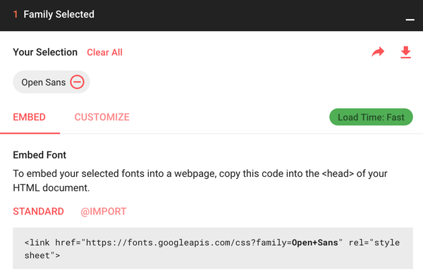
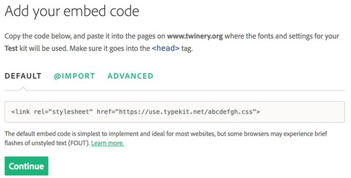
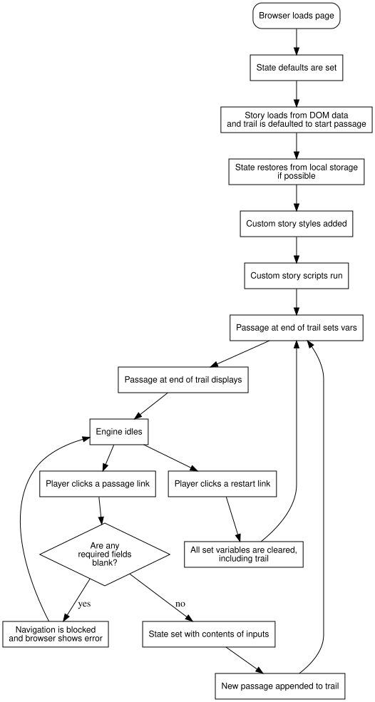

简介
简介｜Introduction
本文是面向 Twine 21 的 Chapbook 故事格式指南。故事格式决定了通过 Twine 编辑器创作的故事在网页浏览器中的呈现方式；当您在 Twine 中点击“启动“按钮或将故事发布为文件时，所选的故事格式便会接管后续处理。
Chapbook 的设计宗旨是让创作者易于使用，同时为玩家生成赏心悦目的阅读体验。它为您的故事提供了合理的默认行为，并支持根据特定需求进行自定义调整。
本指南不要求您具备任何编程知识；不过，了解 CSS 或 JavaScript 会有所帮助，因为本指南大量运用了这两种技术。指南分为若干章节，将循序渐进地引导您完成故事创作过程。
但本指南默认您已熟悉 Twine 2 编辑器本身。若您是 Twine 的新用户，《Twine 2 指南》 是绝佳的入门资料。网络上还有大量可供参考的教程资源。
许可协议｜Licensing
Chapbook 基于 MIT 许可证发布。简而言之，您可将其用于创作免费或商业作品，无需支付任何版权费用。虽不强制要求，但若能在作品鸣谢中提及 Chapbook 与 Twine，我们将不胜感激。
因为 Chapbook 是开源的，其持续的开发与维护得到了以下 Patreon 支持者的资助：
- Anastasia Salter
- Andrew Smith
- Ben McKenzie
- Ben Sawyer
- Brendan Hennessy
- Caelyn Sandel
- Clive Henrick
- Dan Steward
- David Ball
- Emily Short
- Ian
- Illia
- January November
- Joe Nobody
- John Chapman
- John McDaid
- José Dias
- JRUndercover
- Konstanty Kalicki
- LDK
- max puliero
- Molly Jameson
- Robert Giacinto
- RSS
- Sarah Choukah
- Snophysh
- Soliriok
- Stuart Moulthrop
- Thandle2
- TheBuggiest
- Tielesti
- Travis
- Venceremos
特定等级的赞助者可获得开发日志访问权限及其他奖励。若您使用 Chapbook，请考虑在 Patreon 上支持本项目。
浏览器支持｜Browser Support
Chapbook 支持由 browserslist 项目设定的默认网页浏览器集合。您可以在 browserl.ist 上查看其详细内容。
如何使用 Chapbook｜How to Use Chapbook
Chapbook 现已作为 Twine 2 编辑器的一部分捆绑提供，尽管 Twine 的发布有时会落后于 Chapbook。如果您希望单独使用它，或手动更新，请在顶部 Twine 工具栏选项卡下选择“故事格式”选项，然后点击顶部工具栏中的“添加”按钮。将主页上的地址粘贴到 Twine 显示的文本字段中。
完成此操作后，您必须将正在创作的故事设置为使用 Chapbook 发布。编辑您的任意一篇故事，然后从编辑器底部的故事菜单中选择“更改故事格式“。在此处选择 Chapbook。完成设置后，点击播放按钮或将故事发布为文件时都将采用 Chapbook 格式。
为何选择 Chapbook｜Why To Use Chapbook
在 Twine 2 故事格式的众多选择中，难免令人眼花缭乱。那么 Chapbook 具备哪些优势呢？
-
Chapbook 源代码易于阅读。它禁止某些编程实践，例如嵌套条件语句2，同时强制推行其他规范（比如将所有变量声明集中置于段落固定位置），这些设计使得代码逻辑更易于追踪。
-
Chapbook 内置了常见创作场景的功能。从循环链接到延迟文本，许多你想在故事中实现的效果只需一行代码即可完成。
-
Chapbook 设有辅助测试的后台视图，允许你实时检查游戏状态、动态修改变量，并可在任意节点保存进度，从而快速定位故事特定环节的问题。
-
Chapbook 专为多设备适配设计，尤其优化移动端体验。它采用响应式布局技术，能根据屏幕尺寸自动调整页面排版，确保在任何设备上无需缩放或多余滚动即可舒适阅读。同时其代码结构轻量化——目前仅 120 KB，即使在蜂窝网络下也能在一秒内完成加载。
-
Chapbook 的外观可以在不了解 HTML 或 CSS 的情况下进行自定义，它内置的工具让你能够立即在故事中预览样式更改，因此无需学习浏览器开发者工具，你就能打造出理想的外观。
为什么不使用 Chapbook｜Why Not To Use Chapbook
-
Chapbook 还很年轻。这意味着除了本指南之外，相关资源非常稀缺，远不及那些历史悠久的格式（如 SugarCube 和 Harlowe）的众多教程。如果你遇到问题或疑问，能求助的人也会更少。
-
你已经投入了大量时间学习另一种故事格式。Chapbook 能做到的事情，其他格式也都能实现。根据你的喜好，用它写作可能更容易，但如果你已经花时间学习了另一种故事格式的写作方法，再投入时间可能就不值得了。
关于名称的题外话｜An Aside on Names
关于 Twine 产出的是游戏还是仅仅故事，一直存在一些争论：事实上，使用 Twine 既可以制作游戏，也可以创作互动故事，还能创造出那些难以确切归类的事物。秉承着困扰那些偏爱清晰界限的形式主义者的精神，本指南将你在 Chapbook 中创作的内容称为 故事，而与你分享这些故事的人则称为 玩家，但你不应从这个用法中推断出任何特定含义。请用 Twine 和 Chapbook 创造出奇妙的作品吧。
-
遗憾的是，Chapbook 无法与 Twine 1 版本兼容使用。 ↩
-
如果你有编程经验，这个想法可能会立即引起一些警觉——没有这个功能，怎么可能写出任何严肃的作品呢？条件显示 功能讨论了这个主题，但如果你直接跳过去看，可能会有点难以理解。 ↩
致谢｜Acknowledgments
Chapbook 是多种理念的汇流，而非一个完全原创的构想。其变量部分对于任何使用过像 Hexo 这样的静态网站生成器中 YAML 前置元数据的人来说，都是熟悉的领域。而其以状态为中心的设计——与主要通过函数调用实现变化的命令式设计相对——很大程度上源于我从 Redux 中学到的东西，Redux 是 React 生态系统中管理状态的事实标准库。
仅从语法上看，你可能无法察觉，但 Leon Arnott 的 Harlowe 故事格式中的命名钩子，启发了我构建 Chapbook 的许多核心思想。命名钩子最吸引我的地方在于，它将代码与其影响的文本分离开来；这种设计使得逻辑能够与叙述文本相分离——即便只是保持一定距离。
Chapbook 的默认美学在很大程度上借鉴了 Ian Millington 的互动小说引擎 Undum 的风格，以及 Liza Daly 的作品《石港》和《和谐》。我希望您能发现 Chapbook 的外观至少能达到这些范例一半的优雅。如果没有——我希望我为您留下了足够的自定义空间，让您能将其调整得更好。
Chapbook 后台视图中的注释功能灵感来源于 Illume，这是在发布前审阅 Twine 故事的绝佳方式。
如果您查看一下 Twine Cookbook，会发现其目录与本指南的目录有不少相似之处。这并非偶然。我设计 Chapbook 的目标之一就是让常见用例变得简单——而 Twine Cookbook 正是人们希望通过 Twine 实现目标的一个绝佳路标。
你可能还会注意到本指南与 Graham Nelson 所著的《Inform 设计者手册》有某些相似之处。这不仅是我最喜爱的技术写作作品之一，而且很可能正是这份文档，让我对互动小说持续保持着痴迷。
最后，我要感谢我的创意伙伴 Joel Haddock，他耐心地同时扮演了实验对象和共鸣板的角色。
本指南中的照片｜Photos in this Guide
本指南中的照片来源于 Pixabay 和 Unsplash 网站，并根据这些网站的许可条款使用。拍摄这些照片的作者包括：
- Angela Bedürftig
- Gregory Butler
- Lauren Fleishmann
- Free-Photos
- Tom Hermans
- Jason Leung
- Pexels
- Uriel Shuraki
- Rudy and Peter Skitterians
指南翻译｜Guide book translator
- 简体中文：王洛木 Mail: Nomo_Wang@outlook.com Link: https://Raster.Team
文本与链接
文本与链接｜Text and Links
本节首先讲解如何为故事中的文本添加格式，例如粗体或小型大写字母，以及如何在段落间创建链接。完成学习后，您将能够制作出类似《选择你的冒险》系列书籍的数字版本。
文本格式化｜Text Formatting
当然，您可以在 Chapbook 的 Twine 段落中输入文本，它会按预期显示。但对于其他类型的格式设置，例如粗体或斜体，Chapbook 遵循一种名为 Markdown 的流行标记语言的语法。
“标记语言”这个术语听起来可能很复杂，但实际上它只是一套在纯文本中表示格式的约定。例如，要使文本的某部分在显示时变为斜体，您需要在它周围键入星号，*就像这样*。
如果你从未使用过 Markdown，请尝试在阅读本节时使用 dingus。这是一个名字有趣的在线游乐场，不仅能让你快速查看文本的渲染效果，还附带一份速查表，总结了可供你使用的不同格式。但请记住，Chapbook 提供了一些超出标准 Markdown 集的额外格式选项。
斜体和粗体｜Italics and Boldface
要将短语设为斜体，请在其前后键入 * 或 _（单个下划线）。1
| 输入 | 显示 |
|---|---|
_非传统_ 品味 | 非传统 品味 |
*非传统*品味 | 非传统品味 |
（王洛木：由于英语是用空格来分隔单词，但中文是连起来的，所以要使用下划线作为斜体标记的话，要在前后使用空格。选择哪种方案只取决于您的喜好与排版。）
要使短语变为粗体，请在它前后输入 ** 或 __（两个下划线）。
| 输入 | 显示 |
|---|---|
__非传统__ 品味 | 非传统 品味 |
**非传统**品味 | 非传统品味 |
只要在单次使用中保持一致的话，无论使用星号还是下划线都无关紧要，并且您可以在文本中混合使用它们。
| 输入 | 显示 |
|---|---|
**“我要 _杀_ 了你，”** 她嘶声说道。 | “我要 杀 了你，” 她嘶声说道。 |
带下划线的文本｜Underlined text
在网页上通常避免使用带下划线的文本，因为下划线作为一种惯例用于标记超链接文本，而且在许多情况下，使用斜体文本比使用下划线更可取。2然而，如果您想要为纯文本添加下划线，可以通过在其周围写入 <span style="text-decoration:underline"> 和 </span> 来实现。
（还有一个 <u> 的 HTML 标签，最初是表示下划线的信号，并且在许多网络浏览器中仍然如此。但它的含义已经变为“以某种方式注释的文本”；例如，因为拼写错误而加下划线。）
| 输入 | 显示 |
|---|---|
这不是一个<span style="text-decoration:underline">链接</span>，但感觉它应该是。 | 这不是一个链接，但感觉它应该是。 |
等宽字体｜Monospaced Type
要将文本设置为等宽字体，像这样，请在文本前后键入反引号（`）。
| 输入 | 显示 |
|---|---|
`Beep boop,` HAL 评论道。 | Beep boop, HAL 评论道。 |
小型大写字母｜Small Caps
如果您想将某些文本设置为小型大写字母，请在文本前后键入 ~~（两个波浪号）。
If you’d like to set some text in small caps, type ~~ (two tildes) around it.
| 输入 | 显示 |
|---|---|
门上方挂着一个~~NO TRESPASSING~~（禁止入内）的标牌。 | 门上方挂着一个 NO TRESPASSING（禁止入内）的标牌。 |
这一约定虽非原始 Markdown 规范的一部分，但与其他一些 Markdown 方言相冲突，后者使用 ~~ 表示删除线文本，就像这样。要实现此效果，请在文本前后键入 <del> 和 </del>：
| 输入 | 显示 |
|---|---|
页面底部，几乎完全被政府审查员的笔迹所覆盖，正是你之前见过的那个代号：<del>S-5900</del>。 | 页面底部，几乎完全被政府审查员的笔迹所覆盖，正是你之前见过的那个代号： |
换行｜Line Breaks
如果您想插入单行换行，请在行末留两个空格，或在行末放置一个反斜杠（\）。
| 输入 | 显示 |
|---|---|
在最后一个“不”之后，总会出现一个“是”\而那个“是”，正是未来世界所依存的基石。 | 在最后一个“不”之后，总会出现一个“是” 而那个“是”，正是未来世界所依存的基石。 |
章节分隔｜Section Breaks
出版界有时会使用一种惯例来表示新场景或新思路，即用一系列星号分隔文本，如下所示：
漫长的一天过后，我几乎立刻就睡着了。
* * *
第二天早上并不比前一天好。
要在文本中添加分节符，请单独在一行输入 ***（三个星号）。
列表｜Lists
要创建项目符号列表（或者用网络术语来说，无序列表），请在新行开头输入 *、- 或 +。使用哪个字符并不重要，但您需要在每个列表中保持一致。
| 输入 | 显示 |
|---|---|
* 红色* 绿色* 蓝色 |
|
要创建编号列表（也称为有序列表），请以数字和句点开头每一行，或者仅使用 #。您使用的编号实际上并不重要——即使两个项目都以 2. 开头，列表仍将正确编号。
| 输入 | 显示 |
|---|---|
# 红色# 绿色# 蓝色 |
|
1. 红色2. 绿色3. 蓝色 |
|
为何要特意格式化编号列表？就像在文字处理软件中那样，使用这种格式会使每个项目都得到恰当的缩进，从而让每个项目的第二行文本出现在起始编号的右侧。
忽略格式化字符｜Ignoring Formatting Characters
有时您会希望按原样使用被 Markdown 格式化标记占用的字符，那么最简单的方法是在它们前面加上 \（反斜杠）。
| 已输入 | 显示 |
|---|---|
\*\* 请立即退出 \*\* | ** 请立即退出 ** |
其他自定义样式｜Other Custom Styling
您也可以直接将 HTML 代码输入段落中，无需额外代码包裹。输入的内容将完全按照您键入的方式显示。不过，Chapbook 用于渲染 Markdown 的库在处理 HTML 时有时会不一致。它总是会让 HTML 标签原样通过，但这些标签内的内容是被解释为 Markdown 还是 HTML，可能取决于具体情况。遗憾的是，测试这一点的最佳方法是进行实验。
引用块的行为可能出乎您的意料｜Blockquotes Don’t Behave As You Might Expect
Chapbook 的格式化方式与标准 Markdown 在显示块引用时有所不同——块引用是指一段较长的文本，通常包含多个段落，通过缩进表示其不属于正文内容。Markdown 使用行首的 > 符号来标识块引用。然而，Chapbook 中的 > 符号被用于标记分叉文本。若需显示块引用，请使用 <blockquote> 和 </blockquote> 标签包裹相应内容。
| 输入 | 显示 |
|---|---|
<blockquote>叫我 Ishmael。几年前——具体多久不必细说——当时我囊中羞涩，岸上又没什么特别能引起我兴趣的事，便想着不如出海航行一阵，去看看这世界的水域部分。</blockquote> |
叫我 Ishmael。几年前——具体多久不必细说——当时我囊中羞涩，岸上又没什么特别能引起我兴趣的事，便想着不如出海航行一阵，去看看这世界的水域部分。 |
简单链接｜Simple Links
每个 Twine 故事的核心都是链接。Chapbook 遵循 Twine 的链接输入惯例，也就是说，它毫不客气地借鉴了各处维基所使用的语法。
最简单的链接标记法是用双括号将段落名称括起来：[[一扇小门]]。这会在文本中直接显示该段落的标题。
但有时，在文本中隐藏目的地的名称是有道理的——可能是因为你的段落名为“一个可怕的结局”，或者段落标题是大写的，但你希望在一个句子中间链接它。你可以用两种不同但等效的方式来实现这一点。
| 输入 | 显示 |
|---|---|
你信心十足地[[打开了门->一个可怕的结局]]。 | 你信心十足地打开了门。 |
坐在长椅上的那位[[Scarlet 小姐<-年轻女士]]，在你看来似乎莫名地对你心怀愧疚。 | 坐在长椅上的那位年轻女士，在你看来似乎莫名地对你心怀愧疚。 |
（当然，以上示例中的链接并未指向任何具体位置。）
最简单的记忆方法是：将箭头视为指向你所链接的段落。箭头指向哪个方向并不重要；选择让你感觉最舒适的语法即可。
你不能在简单链接内部使用 Markdown 或其他格式字符。例如，如果你想将某个链接设为斜体，应将格式放在链接外部，即 _[[a friend of a friend]]_。关于如何创建内部包含格式的链接（例如《一个拥有特定技能的人》），请参阅链接插入。
外部链接｜External Links
要链接到另一个网页，请输入一个 URL，而不是段落名称。您可以使用任何您喜欢的链接语法，不过箭头语法在大多数情况下能让您的文本更具可读性：
| 输入 | 显示 |
|---|---|
你在你的电脑上[[打开了 Twine->https://twinery.org]]。 | 你在你的电脑上打开了 打开了 Twine。 |
旧版链接语法｜Older Link Syntax
Chapbook 也支持来自 Twine 1 的链接语法，该语法使用竖线（或称管道字符）：
| 输入 | 显示 |
|---|---|
你信心满满地[[打开了门|一个可怕的结局]]。
| 你信心满满地打开了门。 |
分叉｜Forks
在互动小说中，展示一系列可能的选择是一种常见手法，通常出现在段落结尾处。《选择你自己的冒险》系列丛书会在页面底部呈现如下文本：
如果你决定沿着海滩行走，请翻到第 5 页。
如果你决定攀爬岩石山丘，请翻到第 6 页。
在数字格式中工作时，我们当然不需要指定页码，但将这些选择与正文区分开来仍然是不错的做法。Chapbook 将这些链接集合称为 分叉，并通过将每个链接单独成行并在开头加上 > 来标示：
> [[沿着海滩漫步]]
> [[攀爬岩石大崖]]
分叉会在链接之间显示浅色线条，并将链接文本水平居中。请参阅分叉样式以了解如何更改此设置。
链接方式｜Ways to Link
超链接 (Hyperlink) 这个概念，还需要解释吗？你能记得打开网页浏览器后，点击了多少个超链接才找到这份指南吗？我们视超链接为理所当然，因为它们是网络的基础组成部分，然而，我们仍在共同探索它们的所有用途。
而超文本 (Hypertext) 仍然是一种如此年轻的媒介，以至于尽管世界大多认同链接存在不同的类别，但对于这些类别具体是什么，更不用说该如何命名，尚未达成共识。
那么，这里有一些值得思考的问题。
-
《选择导向游戏中的标准模式》 分析了《选择你自己的冒险》系列及其衍生作品，并识别出它们常见的分支方式。
-
《超文本模式》 进行了类似的研究，但其分析对象是 20 世纪 90 年代的文学性超文本作品。
-
《电子文学基础：修辞手法》 提出了一些练习，旨在拓展你对链接运用时的视角。
介绍后台视图｜Introducing Backstage
当您在 Twine 编辑器中点击工具栏的“测试”按钮启动故事时，Chapbook 会启用 后台视图：这是一个位于故事界面侧边的面板，让您能够在以玩家身份体验故事的同时，窥探并调整其内部运行机制。本节将重点介绍后台视图中的“历史记录”与“注释”标签页。其余标签页（“状态”与“样式”）将分别在本指南后续章节《状态后台》与《页面样式》中详细说明。
若需临时隐藏后台视图，可点击视图左侧的箭头按钮，该按钮可切换视图的显示状态。
历史记录标签页｜The History Tab
当你访问故事中的段落时，历史记录标签页将以表格形式显示它们，最旧的位于顶部，最新的位于底部。
你可能会在每个段落名称旁边看到一些额外的行。这些在状态后台中有解释，但目前你可以忽略它们。
使用表格中条目旁边的 ↳ 按钮，可以将故事回退到该段落。
注释标签页｜The Notes Tab
此标签页可用于记录当前阅读段落的注释——包括拼写错误或任何其他想要记录的想法。这些注释独立于故事本身存储，因此当多人协作撰写故事时，每位参与者均可保留各自的注释。您输入的注释将在键入时自动保存。
您可通过“导出注释”按钮导出已输入的注释，并使用“导入注释”按钮将其导入他人的浏览器。若某段落已存在注释，新导入的注释将显示在原有内容下方。如需清空注释，请使用“删除全部注释”按钮。
修饰符与插入
修饰符与插入｜Modifiers and Inserts
本节介绍 Chapbook 允许您在段落中创建更精细内容的两种方式：修饰符与插入。如果您熟悉其他故事格式中的宏，那么它们的工作方式与此类似。
修饰符与文本对齐｜Modifiers and Text Alignment
上一节未提及的一点是如何将文本居中，甚至右对齐。对齐功能从未包含在原始版本的 Markdown 中，因此各种 Markdown 方言都使用自己的标记来实现它。1
Chapbook 使用一种称为修饰符的通用标记，对文本块应用特殊处理。修饰符始终是单行，以方括号2开始和结束，如下所示：
洞口上方，有人刻着：
[align center]
_入此门者，当弃绝一切希望_
文本中的 [align center] 永远不会显示给玩家。相反，Chapbook 会将其后的文本居中显示。正如你可能猜到的，你也可以使用 [align right] 和 [align left]。
continue 修饰符｜The continue modifier
修饰符会应用于其后出现的所有文本，直到段落结束或源文本中出现另一个修饰符。若要取消所有生效的修饰符，请使用 [continue] 如下所示：
洞口上方，有人刻着：
[align center]
_入此门者，当弃绝一切希望_
[continue]
你对你的计划感到有点不那么自信了。
[continue] 仅用于取消所有生效的修饰符。可缩写为 [cont'd] 或 [cont]。
（王洛木：简单来说，就是用来划清上一个修饰符的修饰范围的。）
垂直文本对齐｜Vertical text alignment
如果您想更改页面容器内文本的垂直对齐方式，请参阅[页面样式(./customization/page-style.html)]部分。
-
例如，Twine 2 的默认格式 Harlowe 使用前一行上的标点符号如
=><=来表示居中文本，而其他 Markdown 方言则用箭头包围居中文本，如->今日特卖<-。 ↩ -
如果您想向玩家显示一行包含括号的文本，请在行首输入一个反斜杠（
\）。Chapbook 将按原样显示文本，而不显示您输入的反斜杠。 ↩
延迟文本｜Delayed Text
您也可以使用修饰符使段落中的部分文本延迟显示。如果您从未见过这种效果，不妨看看 Stephen Granade 的《不会让我走》的引言部分。句子会逐渐淡入淡出，最终只留下一个词——“记住”。虽然那个故事并非用 Chapbook 构建，但您可以使用 Chapbook 的延迟文本功能来实现相同的效果。
以下是该修饰符的实际应用示例：
你安顿下来，准备度过漫长的跨大西洋飞行。
[after 1 second]
你突然想起家里的炉子没关。
文本 [after 1s] 永远不会向玩家显示。相反，Chapbook 会在前一段文本显示一秒后，呈现“你突然想起家里的炉子没关。。
您可以在 after 修饰符1中使用任意时间单位，且可缩写时间单位。以下均为有效格式：
[after 300 milliseconds]
[after 300ms]
[after 1 minute]
after 修饰符仅允许使用整数。因此，不能写作 1.5 seconds，而必须写成 1 second 500 milliseconds，或更简短的写法：1s500ms 或 1500ms。
关于使用 after 的建议｜Advice on Using after
应谨慎使用 after 修饰符，且在设定延迟时间时需考虑到每个人的阅读速度不同。一分钟或许看似不长，但对于阅读速度快的玩家而言却无比漫长。
Chapbook 通过在页面右下角显示一个动画手表图标来提示后续将有更多文本出现，不耐烦的玩家可通过点击鼠标或按键跳过延迟。此功能无法被禁用。
修饰符通常创建段落｜Modifiers Normally Create Paragraphs
修饰符通常会使紧随其后的文本与前文处于不同的段落中。不过，在某些情况下，您可能希望文本与前一段落一起显示。append 修饰符可以实现这一效果。
你终于解开了这个谜团。
[after 500ms; append]
但随后你突然意识到：为什么皮考克夫人的手提包里会有一根铅管呢？
分号允许您将多个修饰符连接在同一行中。它相当于：
[after 500ms]
[append]
但随后你突然意识到：为什么皮考克夫人的手提包里会有一根铅管呢？
无论您以何种顺序放置 append 修饰符，这都无关紧要；与 after 不同，您可以单独输入它，无需任何额外说明。
注释｜Notes
在创作过程中，你可能需要在故事中插入一些文字作为给自己的注释——例如，标记某段文字需要修改、说明玩家如何进入某个段落，或者只是提醒自己下次编辑时从何处继续。
为此，请使用 [note] 修饰符。
那是一个风雨交加的夜晚。
[note]
我真的需要一个更好的开头。
当Chapbook显示该段落时，只会呈现“那是一个黑暗而暴风雨的夜晚”。你也可以使用[note to myself]或[n.b.]1来代替[note]。此外，你还可以使用编程领域常用的 [fixme] 和 [todo]。它们的功能与[note]完全相同，但你可以方便地在 Twine 编辑器中搜索这些关键词，以确保在发布前处理完所有事项。比如 [todo] 适用于标记尚未实现的内容，而 [fixme] 则适合标注已发现但尚未修复的问题。
当然，你可以在一个段落中使用多个注释，并与常规文本混合使用：
那是一个风雨交加的夜晚。
[note]
我真的需要一个更好的开头。
[todo]
也许让屏幕闪烁一下？
[continue]
而你感到相当沮丧。
遗憾的是，这些注释与后台“注释”标签页中输入的内容是分开存储的。
-
“注意” (nota bene) 的缩写，这是一种 _提醒关注此处_的花哨写法。 ↩
链接插入｜Link Inserts
有时您想链接到某个段落，但不确定其确切名称。以下面这段为例：
你沿着小巷走了一小段路。黑色垃圾袋在夏日高温下散发出的气味令人难以忍受——它以三种各自不同却又难以名状的方式汹汹袭来——于是你[[暂且退却]]。
一切都很好，只是小巷通常有两个入口。如果玩家可以通过两种不同方式到达这个段落，您如何确保他们返回正确的位置？您可以使用插入来实现这一点。插入是段落文本中的特殊指令，用花括号括起来，{像这样}，它们会被解释而不是逐字显示。之所以称为插入，是因为它们指示 Chapbook 为您在文本中插入某些内容。在这种情况下，我们希望 Chapbook 插入一个链接，指向玩家到达此段落之前正在查看的段落。
在这种情况下，我们会这样写：
你沿着小巷走了一小段路。黑色垃圾袋在夏日高温下散发出的气味令人难以忍受——它以三种各自不同却又难以名状的方式汹汹袭来——于是你{back link, label: '暂且退却'}。
插入内容遵循以下格式：
{ 插入名称 : 值 , 参数名称 : 值 , 参数名称 : 值 }
- 插入名称 (Insert name) 指示此插入的类型，例如
back link（反向链接）。 - 参数名称 (Parameter names) 指示了插入内容应如何显示或行为的更具体描述，例如
label。每种插入类型接受不同的参数名称。与值不同，参数名称从不使用引号包围。一个插入可以包含任意数量的参数，包括零个。上例中展示了两个参数，以说明它们由逗号分隔。 - 值 (Values) 用于指定插入内容的行为。如果参数值是文本——例如词语“暂时撤退”——则必须用单引号或双引号包围，以便 Chapbook 知道文本的起始和结束位置。单引号和双引号的处理方式没有区别；这样书写只是为了方便，例如
{back link, label: '惊呼道, "哎呀，我真是万万没想到！"'}1。任何其他类型的值，例如数字，则不得使用引号包围。
插入内容必须全部位于一行——不允许使用回车键进行换行。
除了插入名称外，上述示例中的所有内容都是可选的。不同的插入使用此用法的不同变体——例如，back link 插入在插入名称后不使用值：
{ back link , label : '暂时撤退' }
您也可以省略 label（标签）属性，直接写成 {back link}: 在这种情况下，Chapbook 会默认使用 ‘Back’ 一词作为链接标签。
如果 Chapbook 无法理解插入内容，它会按原样显示。这样您就可以在文本中正常使用花括号。
重新开始故事｜Restarting the Story
还有一种与 {back link} 非常相似的插入功能，名为 {restart link}。它不会将玩家带回到之前的段落，而是让玩家回到故事的起点。你当然也可以通过名称链接回第一个段落，但现在，可以将其视为一个便捷的快捷方式。{restart link} 还会重置 Chapbook 操作的其他方面，你将在《会话间的连续性》章节中了解到。
与 {back link} 一样，{restart link} 允许你指定一个标签：
{restart link, label: '哦，算了吧'}
如果你单独写 {restart link}，Chapbook 会使用标签 ‘Restart’。
手动链接｜Manual Links
你也可以使用插入 {link to} 来插入链接。以下是一些示例：
经过一番过度的深思熟虑后，你决定下载{link to: 'https://mozilla.org/firefox', label: '火狐浏览器'}。
你注意到一旁有条{link to: '狭窄小巷'}。
正好需要一位{link to: 'Bryan Mills', label: '身怀*绝技*的男子'}。
第三个例子展示了手动插入链接的一种用途：尽管它们比简单链接更为冗长，但确实允许你在链接标签中使用 Markdown 格式。段落链接还有其他用途；关于如何动态更改链接目标，请参阅变量部分。
循环链接｜Cycling Links
Chapbook 提供了一种循环链接插入功能——这种链接不会将玩家导向任何地方，而是会改变其显示标签。更多信息请参阅菜单与循环链接章节。
-
如果需要在以相同标点符号分隔的文本值内使用单引号或双引号，请在其前面加上反斜杠（
\），例如：{back link, label: '"我无 (couldn\'t) 可奉告，" 他回答道。'}↩
揭示链接｜Reveal Links
链接不仅可以显示完全不同的段落，还能在原有段落中揭示更多文本。Liza Daly 在《石港》（她用另一款名为 Windrift 的创作系统编写的故事）中运用了这种效果，赋予故事小说般的质感。
Chapbook 将这类链接称为 揭示链接，它们既能展示更多文本，也能呈现整个段落的内容。
要显示更多文本，请编写：
我深夜驾车回家时，{reveal link: '发生了件怪事', text: '看见五只鹿在路边一字排开，齐刷刷地盯着我'}。
这将首先显示“我深夜驾车回家时，发生了件怪事”，然后当玩家选择“发生了件怪事”时，文本会变为“我深夜驾车回家时，看见五只鹿在路边一字排开，齐刷刷地盯着我”
您在插入内容的任一部分输入的文本都将被解释为源代码，因此您可以使用格式化设置进一步自定义其外观。
文本揭示功能适用于短文本替换，但编写大段文字可能显得笨拙。在这些情况下，请尝试揭示段落内容：
我深夜驾车回家时，{reveal link: '发生了件怪事', passage: '危险事件'}。
这与之前的示例工作原理相同，只是它会显示名为“危险事件“的段落内容。
当使用揭示链接显示包含多个自然段的段落时，Chapbook 会以保持周围文本顺序的方式插入这些段落。
例如，如果您有一个名为“购物清单“的段落：
苹果
香蕉
胡萝卜
然后是一段包含以下内容的文字：
我去买{reveal link: '杂货', passage: '购物清单'}。那是个下雨天。
玩家点击链接后将看到以下内容：
我去买了苹果
香蕉
胡萝卜。那是个下雨天。
请注意，链接插入后的句号被移到了末尾，在“胡萝卜”之后，但并非单独成行，而段落的其余部分继续。
嵌入段落｜Embedding Passages
在分支叙事中，一个常见的需求是让不同的路径汇聚在一起。实现这一点的最简单方法是让两个段落链接到同一个段落，但你也可以通过将一个段落嵌入到另一个段落中，以在故事中创造一个不那么明显的衔接。
例如，想象一下，主角在前往名为“L.A.”的段落途中，要么乘坐飞机，要么乘坐火车：
你花了几个小时看着云朵在飞机机翼下飘移，随后抵达了 [[L.A.]]。
横穿全国的火车之旅，在前往 [[L.A.]] 的途中，为沉思留下了充足的空间。
你也可以使用 {embed passage} 插入功能，直接将段落合并：
你花了几个小时看着云朵在飞机机翼下飘移。
{embed passage: 'L.A.'}
横穿全国的火车之旅，为沉思留下了充足的空间。
{embed passage: 'L.A.'}
两段文字将在其文本下方显示“L.A.”段落的内容。除了段落名称外，{embed passage} 的插入不接受任何其他参数。
请记住，与任何插入功能一样，{embed passage} 可以放置在段落文本的任何位置。它可以夹在段落的文本之间，甚至可以重复使用。
添加状态到故事
状态｜State
在本节中，你将学习如何为故事添加状态，这让你能够追踪到比玩家所遵循的链接更多的信息，从而记录故事的一次完整游玩过程。
状态是什么？｜What is State?
仅凭前一节概述的技巧，你就能创作出引人入胜的故事。自20世纪80年代风靡以来，成为西方流行文化一部分的《选择你自己的冒险》系列丛书正是这样做的。当然，翻到书中特定页面的行为，等同于在数字媒介中点击链接。
但在《选择你自己的冒险》系列走红之后，另一波互动书籍的浪潮随之而来，这些书籍由熟悉《龙与地下城》1等桌面角色扮演游戏的人士创作。他们认为，这种形式可以加以调整，以提供类似现场角色扮演游戏的体验，同时又无需费力召集三四个其他人一同参与。他们开始融入角色扮演游戏的典型元素——尤其是角色卡。
如果你从未见过角色卡，它们类似于电子表格，但并非用于家庭预算或公司损益表，而是以数字方式描述一个角色。一个非常聪明的《龙与地下城》角色可能拥有 17 点的智力，但力量仅为平均水平的 7 点。一个角色可能初始拥有 20 点生命值，但在不幸坠入山体裂缝后仅剩 8 点。
伴随角色卡而来的是状态的概念：即两位读者可能到达游戏书的同一页，但其中一人可能状态极佳，而另一人却濒临死亡。状态的核心特性在于它在不同游戏会话之间会发生变化；因此，它包含变量。这些变量可能是独立的（如力量和智力），也可能是相互依赖的（例如，一个虚弱的角色可能比平时能携带更少的重量）。
状态另一个常见的用途是记录事件是否发生，并据此启用或禁用链接。例如，《夏洛克·福尔摩斯单人探案》系列要求读者在发现线索后，在角色表上勾选线索 A 或线索 Q，随后只有当主角沿途收集到所有必要线索时，才允许其解开谜团。
后来，Storyspace 超文本系统通过其守卫字段引入了状态概念。与勾选线索类似，用 Storyspace 创作的故事可以选择仅向满足守卫字段条件的玩家显示特定链接。
《选择游戏》系列采用了一种非常适合长篇叙事的系统，其设计者将其命名为 Fairmath。Fairmath 对变量变化进行平均处理，使得每次变量增减时，其变化率都会递减。这种效果类似于《龙与地下城》的经验值系统，即随着角色技能提升，进一步升级所需的时间越来越长——尽管 Fairmath 允许变量增减双向变动，而《龙与地下城》玩家几乎总是在单纯积累经验值。
尽管超文本中的状态设定可能源于角色扮演游戏的数值计算，但这并不意味着它必须如此刻板或简化2。Tom McHenry 的《驭马大师》向玩家展示了关于马匹的众多变量，包括“灵异值“和“真实度“，却从未直接解释这些变量的作用。波旁汀的《乞讨景观》使用的变量极少——对玩家而言最明显的是硬币和生命值——但却以残酷的方式运用这些变量。
状态设定是否独立于玩家路径？｜Is State Separate From The Player’s Path?
不过，从某种角度来看，状态难道不正是玩家选择所产生的副作用吗？也就是说——除了记录玩家点击了哪些链接，我们真的还需要记录其他东西吗？如果故事结局取决于玩家是否找到线索 M，那么我们真正需要追踪的显然只是他们访问过哪些段落。这种额外的记录工作根本没有必要。
将状态单独记录有两个原因：首先是为了方便。反复编写类似“如果玩家访问过此段落但未访问另一段落“或“如果玩家访问过这四个段落中的任意一个“的代码是件繁琐的事。其次，故事可能包含随机性元素，即使多次游戏遵循相同的链接路径，也可能产生不同的结果3。
-
《你就是英雄》作为一部对《战斗幻想》系列书籍的回顾，为读者提供了窥探这一受角色扮演游戏影响的游戏书系列历史的迷人视角。若你从未尝试过此类作品，Project Aon网站几乎收录了 Joe Dever 的全部著作——他或许是多产的游戏书作者——并以可在网页浏览器中免费游玩的格式呈现。 ↩
变量部分｜The Vars Section
Chapbook 允许你处理状态的主要方式是通过 _变量 (vars) _部分。这些部分总是出现在段落开头，并且通过两个短杠（--）与普通文本分隔开。
延续上一节的例子，一个极其刻板的地牢探险的第一段可能看起来是这样的：
力量：18
敏捷：7
体质：14
智力：9
感知：8
魅力：11
--
在村中酒馆度过一个纵情狂欢的夜晚后，你踏上了前往最近地下城的小径。这是个阳光明媚的日子，心中有了明确的目标让你倍感愉悦。
当玩家访问该段落时，Chapbook 会在故事状态中添加六个变量：力量、敏捷、体质等，并将它们设置为所列出的数值。
变量区块永远不会向玩家显示任何内容；这样，例如，你可以设置一个名为 doomedToDieInFiveMinutes 的变量，而除非你希望让玩家知道，否则玩家将对此一无所知。
每个段落中只能有一个变量区块，但实际上也只需要一个。状态变量的命名也必须遵循一些规则。它们必须以字母（大写或小写）、下划线（_）或美元符号（$）开头；第一个字符之后可以是前述类型的字符以及数字的任意组合。1
遗憾的是，你不能在变量名中使用空格。因此，一种被称为 驼峰命名法（因其产生的单词形似驼峰）的常见做法是使用大写字母将短语连接在一起，就像上面那个 doomedToDieInFiveMinutes 的例子一样。另一种命名风格，蛇形命名法，则倾向于使用下划线；例如 doomed_to_die_in_five_minutes 。两种方式都完全可以。选择你觉得最舒服的使用即可。
另一种常见做法是，当变量的值仅在当前段落中使用时，在变量名前加一个下划线。这种做法只是给自己一个提示；Chapbook 并不强制要求这样使用。2
变量名唯一会向玩家显示的时刻，是在他们游玩你的故事时发生错误的情况下，因此请选择易于记忆且具有描述性的名称。既然可以使用 sawFootprintsInVault，就没有必要使用 clueF 这样的变量名。
变量具有类型｜Variables Have Types
本节开头的例子为变量分配了数字，但变量也可以保存其他类型的值。
字符串 是字母、数字、空格和其他符号的集合。字符串由撇号（'）或引号（"）包围，以明确其起始和结束位置，这与文本参数值的用法相同。你可以使用任一标点符号来标记字符串的开头和结尾，但就像 Markdown 的斜体和粗体一样，每次使用必须保持一致。如果需要在字符串内部使用分隔符字符，请在其前面键入反斜杠（\），例如 'Don\'t, just don\'t.'。
字符串非常适合用于存储事物的名称。例如，如果您想让玩家在故事开始时为主角命名，字符串将是最佳变量类型。您还可以使用字符串来存储模糊类型的值。例如，您可以将两个角色之间的关系状态记录为“友好”、“中立”、“警惕”或“敌对”。
布尔值 简单地记录真或假的值。与数字类似，你不需要在布尔值周围添加任何符号来表明它是什么；只需输入 true 或 false。布尔值非常适合记录故事中是否发生了某事；例如，主角是否找到了线索。
还有其他更复杂的值类型将在后面讨论，但数字、字符串和布尔值已经足够你使用很长一段时间了。作为回顾，这里有一个示例段落，其变量部分包含了所有三种类型的变量。
dollarsInPocket: 12
openedPortalToAlternateDimension: true
名字: 'James'
--
你的冒险旅程即将抵达终点。
变量可以被计算｜Variables Can Be Calculated
你不必将变量设置为某个单一的值——也就是说，当主角在地上发现一美元时，变量部分可以这样写：
dollarsInPocket: dollarsInPocket + 1
此变量部分通过表达式将 dollarsInPocket 变量增加1。您可以将表达式理解为公式或计算过程，即任何能通过求值转换为单一值的元素。例如，您可以使用基础数学运算——加法、减法、乘法、除法——来处理数值变量。您还可以使用加法连接两个字符串，例如 fullName: first + ' ' + last，但不可对字符串使用其他数学运算符。
您还可以比较两个数字或字符串，得到一个布尔值。
-
===，“等于”
如果两侧是相同的数字或字符串，则为真。字符串必须完全相同：'DOE'不等于'DOE'，'DOE '（注意末尾的空格）也不等于'DOE'。 -
!==，“不等于”
如果两边不相同，则为真。 -
>, “大于”，以及>=，“大于或等于”
如果左侧大于右侧，则为真。如果使用>=，则当两边相等时也为真。 -
<,“小于”，以及<=，“小于或等于”
当左侧小于右侧时为真。如果使用<=，那么当两侧相等时也为真。
一般来说，如果一个字符串在字母顺序中排在另一个之后，就认为它更大。例如，'b' > 'a'。但这些比较可能会令人困惑且不直观。'+' 是否大于 '&'？实际上是的，但你能一眼看出来吗？你可能会惊讶地发现 'A' < 'a'。3因此，通常最好不要对字符串使用大于或小于运算符。
以下是一个变量部分的示例，展示了如何使用这些变量。
correct: guess === 3
nighttime: hour >= 18
--
主持人向后靠在椅子上，咧嘴一笑。
布尔变量有自己独立的一套运算符。
-
!，“非” 将真值变为假，反之亦然。 -
&&，“和”
仅当两侧都为真时，结果为真。 -
||，“或”
当一侧或两侧为真时，结果为真。
用括号澄清表达式｜Clarifying Expressions With Parentheses
表达式常常很复杂。例如，在一个简单的角色扮演场景中，你可能决定一个手持锤子的角色造成力量 * 2 + 4 的伤害。但如果力量是 12，这个表达式是得出 28（12 乘以 2，再加 4）还是 72（2 加 4，再乘以 12）？
你可能记得数学课上学过数学运算符有优先级规则；具体来说，乘法在加法之前进行。但你很可能从未学过布尔逻辑的规则——例如，!true || false 会得出什么结果？4——即使你知道这些规则，在复杂表达式中正确应用它们也可能很棘手。
在这些情况下，你可以使用括号来帮助表达式更易于理解，甚至可以覆盖正常的运算顺序。(力量 * 2) + 4 清楚地表明了表达式将如何被求值——如果你确实希望上面的答案是 72，你可以通过写成 力量 * (2 + 4) 来指定。
求值仅发生一次｜Evaluation Only Happens Once
关于将变量设置为表达式，需要记住的一个重要点是，求值只发生一次，即在你设置变量的时候。想象一下这个场景：
- 在一个段落中，你将变量
牙齿打颤设置为温度 < 0。 - 在后续段落中，主角进入室内并设置温度：
温度 + 20。
变量现在不一致了：牙齿打颤为真，但温度高于 0。避免此问题的最佳方法是避免让一个变量完全从另一个变量派生。如果牙齿打颤这个变量所做的只是反映温度是否大于 0，那么你就不需要一个单独的名为牙齿打颤的变量。更好的用法是设置感冒: 温度 < 0 && !穿着夹克，以反映主角因未穿夹克在室外而感冒了。他们随后可能会进入室内或穿上夹克，但显然这些变化都不会影响主角已经感冒的事实。
表达式可用于插入语句中｜Expressions Can Be Used in Inserts
在插入中，表达式可以替代值使用。例如，以下段落：
目标: '另一个段落'
--
{embed passage: 目标}
将显示名为“另一个段落”的段落内的内容。请注意，这种用法与将变量名放在引号内不同，Chapbook 会将引号内的内容视为字符串。也就是说，这个段落：
目标: '另一个段落'
--
{embed passage: '目标'}
会显示文字“目标”，而非变量值。这当然可能造成混淆。最简单的记忆规则是：单引号或双引号始终用于包裹字符串。如果某个内容没有引号包裹，它就会被求值。
正如标题所示，插入可以使用整个表达式而不仅仅是将变量作为值。例如：
宠物类型: '猫'
活动: '走路'
--
{embed passage: 猫 + 走路}
将显示段落内容为“猫走路”。
-
变量名中可以使用非拉丁字符，例如
sabiduría或мудрость，但请注意，不完全支持 Unicode 标准的旧版网页浏览器——实际上是指如今使用率极低的旧版 Internet Explorer——可能会因此产生严重混淆。（王洛木：真的还有人在用 IE 上网冲浪么……） ↩ -
SugarCube 故事格式推广了这一做法，并且事实上确实会在玩家导航到另一个段落后丢弃以下划线开头的变量。（王洛木：也就是临时变量。） ↩
-
字符串中字符排序的最终依据是 Unicode 标准。字符通过其 Unicode 码点进行比较；数值更高的码点意味着一个字符大于另一个字符。 ↩
-
如果你好奇的话，
!true || false会得出 false。“非”运算符的优先级高于“或”运算符。 ↩
显示变量｜Displaying Variables
当然，仅设置变量本身并无太大意义。它们需要以某种方式影响故事进程。最简单的方式就是直接将变量插入故事中。您可以使用插入功能来显示变量的内容。
以下段落：
名字: '克里斯'
--
“你好，{名字}，你的向导向你打招呼。”
将显示为：“嗨，克里斯，“你的向导向你打招呼。这个例子有点傻，因为你完全可以在名字的位置直接写克里斯。但将其存储在变量中的优势在于，你可以在故事后续部分继续使用名字。例如，你也可以利用这一点，允许玩家选择性别（或不选择性别），然后在整个故事中使用正确的代词。
变量插入不允许任何参数，正如在链接插入中介绍的那样；变量名充当插入名称。1
不能在插入中使用表达式｜You Cannot Put Expressions In An Insert
以下内容不会如你所期望的那样显示：
现金: 3
--
“抱歉，但我决定要价 {现金 + 2} 美元，”销售员回答道。
在变量插入中不允许使用这样的表达式——您只能输入变量的名称。不过，使用临时变量可以轻松实现这一点：
现金: 3
_不合理价格: 现金 + 3
--
“抱歉，但我决定这件东西要价{_不合理价格}。”销售员回答道。replies.
-
您总是可以通过查看其中是否包含空格来区分变量插入与其他类型的插入。
{back link}绝不可能是变量插入，因为back link包含空格，因此绝不可能是变量的名称。 ↩
条件性显示｜Conditional Display
故事中变量的另一个常见用途是封锁对某个分支的访问，或者相反地解锁故事的隐藏部分。要在 Chapbook 中实现这一点，你需要将变量与修饰符结合使用。
例如，假设你有一个段落，描述主人公在杂草丛中发现一把钥匙：
hasKey: true
--
真是件怪事：就在树根周围的杂草丛中，躺着一把锈迹斑斑的钥匙。
捡起钥匙后，你决定[[继续前进]]。
随后在故事中，当主人公遇到这把钥匙对应的门时：
在大厅的尽头，你发现一扇毫无特色的钢门。
[if hasKey]
你可以尝试用找到的钥匙[[打开它]]。
[continue]
你思考了一下，只得[[转身回去]]。
只有当玩家早些时候找到了钥匙，他们才会看到“你可以试试用找到的钥匙打开它”，但在所有情况下他们都会看到“你思考了一下，只得转身回去”。if 修饰符仅在修饰符中的表达式评估为真时，才显示其下方的文本。你可以输入任何最终能评估为布尔值1的内容。更多示例：
[if stringVariable === 'red'][if dollarsInPocket > 5][if 2 + 2 === 4]
除非条件｜Unless Conditions
在某些情况下，使用 unless 比使用 if 更具表现力。
[unless tookAntidote]
时间已耗尽。你的呼吸在喉间停滞；身体从椅子上滑落，世界陷入黑暗。
unless 修饰符的工作方式与 if 完全相同，唯一的区别是，只有当它们的条件评估为假时，才会显示其后的文本。
否则条件｜Else Conditions
本节第一个示例的措辞有些生硬。我们可以使用 else 修饰符使其更流畅：
[if hasKey]
你可以试试用找到的钥匙[[打开它]]，或者直接[[转身离开]]。
[else]
除了[[转身离开]]以外，无事可做。
else 修饰符会在前一个 if 未显示文本时显示其后的文本。它们与 unless 条件无关。else 也仅适用于单个段落；如果你在一个段落中使用 if，则不能将匹配的 else 放在另一个段落中。如果你发现需要跨段落实现类似逻辑，请在第二个段落中使用 unless 来替代 if然后重复相同的判断条件。
修饰符（包括条件修饰符）不能嵌套｜Modifiers (Including Conditional Ones) Cannot Be Nested
在 Chapbook 中，无法直接嵌套条件修饰符。这意味着：
[if hasKey]
你可以[[打开门]]...
[if monsterDistance < 2]
……这或许是你生存的最佳机会。
如果 hasKey 为 false 且 monsterDistance 为 1，则只会显示：
Would, if hasKey is false and monsterDistance is 1, only display:
……这或许是你生存的最佳机会。
这是因为修饰符仅影响紧随其后的文本。它们不会影响文本中位于其前或后的其他修饰符，也不会影响任何其他文本。要解决这一问题，你应该这样写：
[if hasKey]
你可以[[打开门]]...
[if hasKey && monsterDistance < 2]
……这或许是你生存的最佳机会。
让我们来看一个更复杂的例子：
- 玩家必须首先通过观察找到某扇特定的秘密门。
- 一旦找到，这扇门只能用他们之前找到的钥匙来解锁。
- 一旦解锁，门将保持开启状态。
这可以用流行的SugarCube故事格式写成：
<<if $doorFound>>
<<if $doorUnlocked>>
门敞开着，没有上锁，随时欢迎你[[踏入其中]]。
<<else>>
你在这里发现了一扇门，<<if $hasKey>>随时可以[[解锁]]<<else>>但还没找到能打开它的钥匙。
<</if>>
<<else>>
这里似乎没什么值得注意的，但也许[[搜索一下会有所发现]]。
<</if>>
（为简洁起见，本例省略了设置 $doorFound 和 $hasKey 的其他代码段。）
在 Chapbook 中，您可以使用临时变量来简化段落的部分逻辑，并写成：
_doorOpen: doorFound && doorUnlocked
_doorLocked: doorFound && !doorUnlocked
--
[if _doorOpen]
门敞开着，没有上锁，随时欢迎你[[踏入其中]]。
[if _doorLocked]
你在这里发现了一扇门，
[if _doorLocked && hasKey; append]
准备好被[[解锁]]。
[if _doorLocked && !hasKey; append]
但你还没找到能打开它的钥匙。
[if !doorFound]
这里似乎没什么值得注意的，但也许[[搜索一下会有发现]]。
请记住，doorFound、doorUnlocked 和 hasKey 是在其他段落中设置的。请注意——您不能在“但你还没找到能打开它的钥匙。”前使用 [else]。该 else 会在所有 [if] 不成立的情况下显示，即使 doorFound 为 false 时也是如此。
另一种方法是将部分逻辑移至单独的段落并嵌入:
An alternate method is to move parts of your logic to a separate passage and embed it:
_doorOpen: doorFound && doorUnlocked
_doorLocked: doorFound && !doorUnlocked
--
[if doorFound && doorUnlocked]
门敞开着，未上锁，静候你[[踏入其中]]。
[if doorFound && !doorUnlocked]
{embed passage: 'locked door logic'}
[if !doorFound]
这里似乎没什么值得注意的，但也许[[搜索一下会有发现]]。
采用哪种方法最佳取决于具体情况。不建议将段落嵌入超过一个层级。
禁用测试条件｜Disabling Conditions For Testing
覆盖条件修饰符使其无论何种情况都始终显示或从不显示，这个功能有时会很有用。为此，只需将 [if] 改为 [ifalways] 或 [ifnever] 即可。
[ifnever 1 + 1 === 2]
这原本应该通过常规的[if]条件显示，但实际并未显示。
这将影响其后出现的任何[else]修饰符。
-
实际上，也可以写成
[if stringVariable]或[if 2 + 2]。在这些情况下，任何非空字符串（例如非''）都被视为真，任何非零数字也被视为真。不过，最好还是明确地写成[if stringVariable !== '']和[if 2 + 2 !== 0]。 ↩
条件和变量｜Conditions and Variables
你不能在段落变量部分使用插入或修饰符，因此不能编写如下代码：
[if 亲戚 > 10]
大家庭: true
--
你靠在椅背上，开始考虑需要邀请哪些人来参加这次聚会。
相反，有两种方法可以根据条件为变量赋值。首先，可以将变量赋值为比较结果，即真或假：
大家庭: 亲戚 > 10
--
你靠在椅背上，开始考虑需要邀请哪些人来参加这次聚会。
这段文字根据变量亲戚的值，将变量大家庭设置为 true 或 false 。然而，除了布尔值之外，您可能还想将变量设置为其他类型的值。为此，请在赋值中添加一个条件：
载具: '汽车'
载具 (里程 > 1000): '飞机'
--
你需要乘坐{载具}以到达那里。
此示例展示了关于变量部分的两个新特性：
- 您可以在单个变量部分中多次更改变量。Chapbook 会按照从上到下的顺序更改变量。
- 如果在冒号（
:）之前的括号内写入一个表达式，该表达式用于告诉 Chapbook 要设置的值需要在表达式评估为true时才会生效。
首先，交通工具被设置为汽车，然后，如果里程大于 1000，交通工具的值会立即被改为“飞机”。Chapbook 会按顺序处理每个变量赋值，中间不进行其他操作，因此这两个赋值实际上相当于一个操作。
这里有一个更复杂的例子，展示了多个赋值和条件如何协同工作。
语言: '未知语言'
语言 (国家 === '巴西'): '葡萄牙语'
语言 (国家 === '中国'): '普通话'
语言 (国家 === '埃塞俄比亚'): '阿姆哈拉语'
语言 (国家 === '俄罗斯'): '俄语'
语言 (国家 === '澳大利亚' || 国家 === '美国'): '英语'
--
{country}的官方语言是{language}。
尽管 Chapbook 会按照你编写的顺序设置变量，但通常这并不重要，因为你通常会编写相互排斥的条件——也就是说，只有一行会实际生效。
话间的连续性｜Continuity Between Sessions
Chapbook 的设计使得玩家无需像在数字游戏中通常那样手动保存进度。相反，每当玩家导航至新的段落时，它都会静默地保存游戏状态。
这既是出于必要，也是设计使然。持续保存进度是必要的，因为浏览器，尤其是移动设备上的浏览器，对资源极为吝啬。如果玩家开始阅读你的故事，但决定在另一个浏览器标签页中查看社交媒体，然后沉浸在一系列可爱的猫咪图片中，浏览器可能会决定将你的故事标签页置于类似休眠的状态。当玩家返回你的故事时，浏览器基本上会重新加载故事1，这会导致任何未保存的进度丢失。因此，需要持续保存进度。
这也抑制了玩家中一种被称为“存档作弊”的习惯，即玩家不断保存并重新加载进度，以寻求他们认为最理想的结果。
Chapbook 通过使用网络浏览器的一项名为本地存储的功能来保存状态。如果你熟悉浏览器 cookie，本地存储的工作原理与之类似，不过本地存储允许存储的数据量远大于 cookie。你无需了解这两项技术即可成功使用 Chapbook，但需要理解以下两点：
-
玩家的状态仅保存在其设备和所使用的浏览器中。如果玩家开始时使用 Microsoft Edge，中途改用 Mozilla Firefox，他们将在 Firefox 中从故事的最开始重新开始。当然，他们在 Edge 中的进度并未丢失。同样地，如果他们在手机上开始游戏，中途切换到笔记本电脑，也将从头开始。
-
如果玩家清除了浏览历史记录，他们将会丢失在您故事中的进度。
由于状态会在会话间保留，一旦开始在故事中使用状态，您必须使用 {restart link} 插入才能重新开始故事。如果仅链接回第一个段落，变量将保持在游戏结束时的状态——这很可能会导致奇怪的结果。
-
实际上，当这种情况发生时，您通常会短暂看到一个加载指示器，而不是页面立即重新出现。 ↩
状态后台｜State Backstage
状态处理起来可能非常棘手，因为它通常不会直接在故事中显现——你只能从其副作用中推断。Chapbook 提供了工具，让你在测试故事时能够追踪甚至更改状态。
状态标签页｜The State Tab
在“状态“选项卡下，您会看到一个“变量“标题。这里会显示您在游玩过程中故事的当前状态。您还可以在变量表的右侧选择一个值并输入新值——完成后按回车键或 Enter 键来设置变量。您只能在变量表中输入数值，不能输入表达式。
如果勾选了“显示默认值“复选框，Chapbook 将显示各种内置变量——主要与 Chapbook 的配置相关。更多详情请参阅“自定义“部分。
状态快照｜State Snaphots
变量表下方是快照标题。快照功能允许您快速保存和恢复故事在任意时间点的状态。例如，若想跳过序章或测试特定场景，只需照常推进故事流程。当抵达希望跳转的位置时，点击“添加快照“按钮。命名快照后，它将作为按钮出现在快照标题下方。点击该按钮可立即将故事状态（包括您当时浏览的段落）恢复至保存时的状态。
点击快照按钮末端的 × 按钮即可将其删除。快照仅保存在您的网页浏览器中。
历史状态｜State in History
历史标签页还会在您浏览故事时显示状态的变化。如果某个段落修改了变量，您会在历史表格中看到单独的一行显示该变更。这仅为信息展示——您无法通过历史标签页修改变量。
对象与查询变量｜Objects and Lookup Variables
除了您创建的变量之外，Chapbook 还维护了许多称为查询的内置变量。与常规变量不同，查询变量无法由您更改。相反，它们对应于环境中的属性——例如玩家与您的故事互动时的当前日期和时间，甚至故事本身。
对象简介｜Introducing Objects
为了尽可能为您保留更多可用的变量名，Chapbook 将其内置的查询变量通过对象进行分组。对象是另一种类型的变量——类似于字符串、布尔值或数字——它充当其他变量的容器。与字符串或数字等简单变量类型不同，对象本身没有值。它们只包含其他变量。
要访问对象容器内的变量，请输入对象名称，然后是一个句点（.），再然后是变量名。例如，story.name 访问的是 story 对象内名为 name 的变量。
您可以根据需要任意嵌套对象，并且也可以在段落（passage）的变量部分编写类似这样的内容：
my.favorite.variable: '红色'
如果尚不存在，Chapbook 将为您创建每个对象变量（例如 my 和 favorite）。
内置查询变量｜Built-In Lookup Variables
以下是 Chapbook 为您维护的查询列表：
| 变量名称 | 描述 | 示例 |
|---|---|---|
browser.darkTheme | 当前 Chapbook 使用的有效主题是否为深色模式。 | true |
browser.darkSystemTheme | 浏览器当前是否设置为使用深色用户界面。通常通过系统偏好设置实现。 | true |
browser.height | 浏览器窗口的高度（以像素为单位）。 | 768 |
browser.online | 浏览器当前是否具有网络连接。 | true |
browser.width | 浏览器窗口的宽度，以像素为单位。 | 1024 |
engine.version | 当前运行的 Chapbook 版本，以字符串形式表示。 | '1.0.0' |
now.datestamp | 当前日期的简短、人类可读描述。 | '2/15/2011' |
now.day | 当前月份中的日期，范围是 1 到 31。 | 15 |
now.hour | 当前时间的小时数，其中午夜为 0，晚上 11 点为23。 | 18 |
now.minute | 当前时间的分钟数，范围是 0 到 59。 | 15 |
now.month | 当前月份，范围是 1 到 12。 | 2 |
now.monthName | 当前月份的名称。 | 'February' |
now.second | 当前时间的秒数，范围 0-59。 | 45 |
now.timestamp | 当前时间的十二小时制易读版本。 | '6:18:15 PM' |
now.weekday | 当前星期几，其中星期日为 1，星期三为 4，星期六为 7。7. | 3 |
now.weekdayName | 前星期几的名称。 | 'Tuesday' |
now.year | 当前的四位数年份。 | 2011 |
passage.from | 玩家最后访问的段落名称，由 Twine 编辑器中设置的一样。若玩家仅访问过单个段落，则此项 undefined（未定义）。undefined. | 'Untitled Passage 1' |
passage.fromText | 玩家上次用于跳转至新段落的链接文本。若玩家仅访问过单个段落，则此项为 undefined。若玩家通过点击链接以外的其他方式移动至另一段落，则此项反映的是最后使用的链接。 | 'Link name' |
passage.name | 在 Twine 编辑器中设置的当前段落名称。 | 'Untitled Passage' |
passage.visits | 玩家已查看当前段落的次数，包括当前这次。也就是说，玩家首次查看一个段落时，此查询变量的值为 1。 | 1 |
story.name | 故事在 Twine 编辑器中设定的名称。 | 'Untitled Story' |
请注意，now 查询值反映的是它们最后一次被访问的时间，这通常是在导航到某个段落时。像 now.monthName 这样的字符串值会根据玩家在浏览器中设置的默认语言而变化——例如，法国人会看到 Août，而美国人会看到 August；同样地，法国人看到的 now.datestamp 会是 '15/2/2011'，而美国人看到的则是 '2/15/2011'。
随机性｜Randomness
随机性是创造互动体验的强大工具。它不仅能用于模拟——例如决定角色行动是否成功，就像桌面角色扮演游戏那样——还能用于美学目的，从改变文本措辞到创造完全随机的叙事。
在 Chapbook 中利用随机性的主要方式是通过 random 对象中的查询变量。例如：
[if random.coinFlip]
正面！
[else]
反面！
……在故事运行时，有一半的概率会显示“正面！”，另一半概率显示“反面！”。random.coinFlip 的值在每次使用时都可能发生变化。1
如需更精细的随机性，可以使用查询变量，例如 random.d100，这是一个介于 1 到 100 之间的随机整数。完整列表如下：
| 查询 | 范围 |
|---|---|
random.fraction | 0-1 |
random.d4 | 1-4 |
random.d5 | 1-5 |
random.d6 | 1-6 |
random.d8 | 1-8 |
random.d10 | 1-10 |
random.d12 | 1-12 |
random.d20 | 1-20 |
random.d25 | 1-25 |
random.d50 | 1-50 |
random.d100 | 1-100 |
上面列出的所有查询结果都是整数，只有 random.fraction 例外，它是介于 0 到 1 之间的小数。
使用这些查询变量时容易犯的一个错误是忘记它们的值每次被调用时都会改变。例如：
[if random.d4 === 1]
一。
[if random.d4 === 2]
二。
[if random.d4 === 3]
三。
[if random.d4 === 4]
四。
上面这段文字可能只显示一个段落，但也可能显示多个段落，甚至完全不显示任何内容。由于 random.d4 的值会变化，最终结果可能呈现如下形式：
[if 4 === 1]
一。
[if 2 === 2]
二。
[if 1 === 3]
三。
[if 4 === 4]
四。
…这将显示：
二。
四。
若想重复使用某个特定的随机值，最简单的方法就是将其赋值给变量，例如：2
_chosen: random.d4
--
[if _chosen === 1]
一。
[if _chosen === 2]
二。
[if _chosen === 3]
三。
[if _chosen === 4]
四。
Chapbook 是伪随机的｜Chapbook Is Pseudorandom
Chapbook 的随机性并非真正随机：实际上，它生成随机数的过程完全可预测。这听起来可能很荒谬，但几乎所有计算机生成的随机数都是如此运作的。Chapbook 使用的是所谓的伪随机数生成器，它基于一个种子值生成一串看似随机的数字。
伪随机数生成器在使用特定种子值时，总会生成相同的数值。除非另有说明，Chapbook 将采用基于游戏流程首次启动日期时间的种子值，因此每个会话将呈现不同的伪随机数值。Chapbook将此种子值存储在 config.random.seed 中，该变量支持读取与写入操作。
不过，你为何要更改伪随机种子呢？这有助于测试——例如，如果有人报告了你的故事存在问题，你可以将种子值设置为他们的，从而能够完全按照他们经历的方式重现事件。你还可以在提供给他人测试的故事版本中手动设置种子值，以确保每个人都有一致的体验。
-
也就是说，正如《Rosencrantz 和 Guildenstern 已死》中所展示的那样，
random.coinFlip在被读取后仍可能保持相同的值。 ↩ -
此例在变量名中使用下划线来标识临时变量，但请记住这仅是一种约定。 ↩
多媒体
多媒体｜Multimedia
本节介绍如何在故事中添加图像、音频和视频。
发布模式｜Publishing Models
Twine 2 目前不允许在故事文件中嵌入图像、音频或视频等资源。这是为了让您的故事能够快速高效地加载。Twine 1 通过使用一种称为 Base64 的技术对资源进行编码来允许此操作，该技术将二进制数据转换为可以安全嵌入HTML的文本。但这有两个缺点：
- Base64 会使文件大小增加 33% 的开销，导致故事加载速度显著慢于原本可能达到的速度。
- 故事必须在其所有资源完全下载完成后才能开始播放。如果故事使用了许多图像，这可能会带来麻烦；而对于音频和视频文件（其大小通常是图像的十倍），这种情况将是灾难性的。
在 Twine 2 中，所有多媒体资源都必须独立于已发布的故事文件本身而存在。您可以选择两种方法。两种方法同样可行——具体取决于您的情况。
自包含发布｜Self-Contained Publishing
在这种方法中，您将故事使用的资源与已发布的故事文件本身存放在同一位置。典型的安排如下所示：
- Story.html
- Assets
- Images
- Photo 1.jpeg
- Photo 2.jpeg
- Audio
- Intro Song.mp3
- Images
自包含模式的一个优势在于，你的作品可以轻松打包成归档文件（通常为 ZIP 格式），并在数字市场上架。这种情况下，玩家只需下载一次故事文件，解压后即可开始游玩，无需保持活跃的网络连接。
自包含故事也可直接发布至网站，这样玩家就无需额外经历下载归档文件并解压的步骤，但需要注意网站将消耗的带宽。带宽是衡量网站数据传输量的指标。如果你发布的故事包含一个 1MB 大小的音频文件（约 1 分钟时长），且有 1000 名玩家体验，网站将消耗 1GB 带宽。
一些网站托管服务商承诺以固定费用提供无限带宽，但若网站使用过多带宽则会限制连接速度；另一些服务商则会暂时关闭使用过多带宽的网站。还有些服务商会保持您的网站全速运行，无论消耗多少带宽，但会根据实际使用量收取浮动费用——有时金额相当高昂。
总而言之：如果您计划将独立故事发布到网站，应当了解所选托管服务商的使用限制。
独立发布的另一个缺点是，Twine 2 目前缺乏足够工具来辅助故事创作。为确保素材正确显示，您必须将故事发布至与素材相同的文件夹。在 Twine 2 内部测试故事时，素材将无法正常显示。
当您向独立故事添加资源时，需要使用_相对 URL_。您之前已经接触过URL——它们显示在网页浏览器窗口的顶部，用于指示资源的存储位置。它们通常以 http:// 或 https:// 开头。然而，相对URL是根据您已发布的故事文件的位置来定位资源的。在上面的示意图中，开场音乐的相对 URL 是 Assets/Audio/Intro Song.mp3。相对 URL 不以任何前缀开头；相反，故事文件目录下的每个子目录都用正斜杠（/）分隔，资源文件名放在最后。如果您链接的资源与已发布的故事文件位于同一目录中，那么该资源的文件名即可作为相对 URL 使用。
云发布｜Cloud Publishing
在这种模式下，您将资产发布到现有的服务平台，如 Flickr 或 YouTube。故事文件可供下载或发布至网站，但资产会从这些外部站点加载。因此，玩家在游戏过程中需要保持活跃的互联网连接。
云发布意味着您无需担心带宽问题，但作为交换，大多数服务会在您的资源上添加某种水印或其他标识信息，以表明您正在使用他们的服务。托管服务也有服务条款，可能会对您发布的内容类型施加限制。
云端发布还允许您在 Twine 2 中直接测试故事，无需将故事发布为文件。为此，您有时会使用 嵌入代码 将资源整合到故事中——这是由您使用的服务提供的 HTML 源代码片段。
若选择使用云端资源，务必确保您具备合法使用权限。直接盗链资源（即未经许可从其他服务器嵌入素材）的行为极具诱惑力，但那是种不当做法——您可能使资源所有者承担带宽成本（如前述“自包含发布模式”所述），且若被资源所有者发现，对方可移除您链接的资源，甚至替换为令人反感或尴尬的内容。
图像｜Images
嵌入您自己的图像｜Embedding Your Own Images
要在段落中显示图像，请使用 {embed image} 插入：
要知道，可能已经上千年没人踏足过这个洞穴了。洞口长满了青苔和落叶。
{embed image: '洞穴.jpeg', alt: '洞穴入口'}
（王洛木：当然，你也可以通过把网络图片链接的地址插入进去以引用。）
alt 属性的解释请参见下文“替代文本”部分。
嵌入来自 Flickr 的图片｜Embedding Images from Flickr
Flickr 是一个历史悠久的摄影服务平台，允许用户将上传的照片标记为可供嵌入。若某张照片支持嵌入功能，您会在照片右下角看到一个类似箭头的图标。选择该选项将显示用于嵌入的代码，这段代码通常较为冗长。请务必使用“嵌入”标签页中的代码，而非“分享”或 “BBCode” 标签页的代码。获取代码后，请按以下方式使用 {embed Flickr image} 插入功能。
(注：截止至本文翻译的 2026 年，Flickr 无法在中国大陆访问，请使用其它方案。)
生动的夜空：
{embed Flickr image: '<a data-flickr-embed="true" href="https://www.flickr.com/photos/kees-scherer/43929816675/in/photolist-29VVN1k-MxBBfR-Mxmaoa-2abPdAf-28uxzXE-MsR1ev-MqbA18-P2bWEY-29LvwHZ-P1DPQ7-2b3znq5-28jiA4E-2b4qGd6-29QQrVa-2a4C5X3-MhDEFV-2b3tVwa-MfPdhz-2aZTken-2aTGEx1-2aVbrLg-NLVUU7-289o89h-288U1wq-2aN6BuN-NH87Jm-2aQH3Ta-NDwgPd-NB3Mym-2aHjvXP-29jgSN2-29zFLg5-27TFbQw-Nw3iLs-2aD2Dfn-27SXWGo-29f84mZ-LRdL8r-2aVtHgk-2awe7hj-29ux7nq-LPVrYk-2avhxQJ-2azf7ct-2ayX3mM-2aygKz8-27Nwi91-27NmmvS-NqvSME-2axAzDV" title="The Andromeda Galaxy, Messier 31"><img src="https://farm2.staticflickr.com/1857/43929816675_07357e53b0_m.jpg" width="240" height="185" alt="The Andromeda Galaxy, Messier 31"></a><script async src="//embedr.flickr.com/assets/client-code.js" charset="utf-8"></script>', alt: 'the Andromeda galaxy'}
替代文本｜Alternate Text
无论您的图像来自何处，都必须为其提供 替代文本。这是为了让有视觉障碍的玩家能够获得与无障碍玩家同等的体验。WebAIM 对替代文本有非常详尽的阐述，但核心要点是：替代文本应包含对图像内容的简要描述，以便在朗读故事时能为听众提供良好的理解。因为对于有视觉障碍的玩家而言，他们通常确实会通过屏幕阅读软件来听取故事内容。
撰写替代文本时，请避免使用“亚伯拉罕·林肯的图像“或“波士顿港照片“这类表述——直接使用“亚伯拉罕·林肯“或“波士顿港“即可。
如果您的图像纯粹是装饰性的——例如，一个花哨的边框——那么它应该设置空的替代文本，以便屏幕阅读器可以跳过它：这并不意味着完全省略alt属性，而是将其设置为空字符串，如下所示。
{embed image: 'asterisk.jpeg', alt:''}
音频｜Audio
Chapbook 支持两种类型的音频：环境音和音效。环境音是持续播放的音频，例如音乐或背景噪音，播放完毕后会自动循环。音效是一次性的声音，比如开门声或爆炸声。
音效与环境音之间还有另外两个区别：
- 通常情况下，同一时间只能播放一种环境音。
- 音效会在故事开始时预加载。这样当你在故事中要求播放某个音效时，就能最大程度减少播放前的延迟。但这也意味着你需要注意所用音效的文件大小。预加载过程会在玩家与故事互动时于后台进行，因此大型音效文件不会延迟故事的开始。但加载大文件仍然会造成资源浪费。
你还需要确保所有音频均为 MP3 格式。虽然存在 Ogg Vorbis 或 WAV 等其他音频格式，但不同浏览器对这些格式的支持程度各异。MP3 是兼容性最广的通用格式。包括开源软件 Audacity 在内的许多应用程序都能帮你将音频文件转换为 MP3 格式。
音效｜Sound Effects
在播放音效前，你必须在故事状态中先定义它。以下是如何定义音效的示例：
sound.effect.爆炸.url: '爆炸.mp3'
sound.effect.爆炸.description: '一场大爆炸'
--
计时器显示为 0:00…
explosion 关键字定义了环境音的名称，你稍后会用到它。url 属性定义了加载声音的地址，description 则提供了声音内容的文字描述。这样，听力有困难的玩家或已将故事静音的玩家就能获得声音的替代版本。
定义好音效后，你可以使用 {sound effect} 插入在段落中播放它。
sound.effect.爆炸.url: '爆炸.mp3'
sound.effect.爆炸.description: '一场大爆炸'
--
计时器显示为 0:00…
{sound effect: '爆炸'}
插入的确切位置很重要。如果玩家禁用了声音，或无法听到你的声音，他们将在你插入的地方看到 description 属性的文本。
如果你在同一段落中插入多个不同的音效，它们会同时播放。如果某个音效仍在播放时，玩家进入了另一个插入了该音效的段落，则第二次插入不会产生效果。（王洛木：也就是说，正在播放音效不会因为被另一段落中重复触发而重播或打断。）
如果你需要重复播放一个音效，请多次定义它。你可以通过赋值整个对象来节省时间。例如：
sound.effect.爆炸.url: '爆炸.mp3'
sound.effect.爆炸.description: '一场大爆炸'
sound.effect.爆炸2: sound.effect.爆炸
--
计时器显示为 0:00…
{sound effect: '爆炸'}
[[哦呼。]]
（请注意，在设置 sound.effect.爆炸2 的那一行中，sound.effect.爆炸 没有使用引号。）
将 sound.effect.爆炸2 对象整体赋值，而不是逐属性设置，可以让它成为 sound.effect.爆炸 的一个副本。如果你之后更改了 sound.effect.爆炸 的某个属性，sound.effect.爆炸2 也会随之改变。
接着，在名为哦呼。的段落中，你会写道：
这还不算太糟。等等……
{sound effect: '爆炸2'}
环境音效｜Ambient Sound
定义环境音效的过程与定义音效非常相似。
sound.ambient.森林.url: '森林.mp3'
sound.ambient.森林.description: '中午的森林氛围声'
--
完美的一天。
同样地，你可以通过插入 {ambient sound} 来开始播放环境音效。
sound.ambient.森林.url: '森林.mp3'
sound.ambient.森林.description: '中午的森林氛围声'
--
{ambient sound: '森林'}
完美的一天。
唯一的区别在于，音效会淡入播放，如果已有环境音正在播放，两者会交叉淡出过渡。淡入淡出的具体时长由状态变量 sound.transitionDuration 决定。该变量为字符串格式，与 after 修饰符接受的格式相同。
若要停止播放所有环境音，请写入 {no ambient sound}。
控制音效音量｜Controlling Sound Volume
要设置故事的主音量，可将状态变量 sound.volume 更改为 0 到 1 之间的小数。0 表示静音，1 表示最大音量。您也可以通过将 sound.mute（注意末尾没有字母 D）设为 true 来临时静音所有音效。使用 sound.mute 的优势在于，它允许您在静音状态与先前设置的音量之间切换。
{sound effect: '爆炸', volume: 0.5}
{ambient sound: '森林', volume: 0.5}
浏览器自动播放问题｜Browser Autoplay Problems
Chapbook 会尽力在游戏会话之间恢复音频播放，这样如果你开始播放环境音效，每当玩家返回你的故事时，音效都会自动继续。然而，这种做法与大多数浏览器对网页加载时立即播放声音的严格限制相冲突。部分浏览器会全面禁止此类行为，而另一些则会考虑玩家在托管你故事的网站上的行为记录——如果玩家之前在该网站有过频繁互动，浏览器可能会允许播放，但具体的允许标准往往并不明确。
但是玩家在故事中点击或轻触链接后播放声音，无论浏览器的自动播放政策如何，这个操作都会终有效。
手动控制声音｜Manually Controlling Sound
您也可以通过将音效或环境音的 playing 属性设置为 true 来手动播放声音。音效播放完毕后，该属性会自动变为 false，但环境音的播放属性除非您使用 {ambient sound} 插入或再次将其播放属性设为 false，否则不会改变。
所以您可以将此用于更复杂的效果，例如叠加环境音；但必须确保为无法听到音频的人提供适当的描述。为此，请将描述内容置于<audio> 和 </audio> 标签之间，如下所示：
sound.ambient.森林.playing: true
sound.ambient.下雨.playing: true
--
你走到室外了了。
<audio>雨林的背景音</audio>
其中的文本通常不会显示。
视频｜Video
嵌入您自己的视频｜Embedding Your Own Video
嵌入 YouTube 视频｜Embedding a YouTube Video
您听说过 YouTube 吧？要嵌入 YouTube 视频，请使用其 URL 搭配 {embed YouTube video} 插入此功能：
告诉我你以前是否看过这个。
{embed YouTube video: 'https://www.youtube.com/watch?v=9bZkp7q19f0'}
自定义
自定义｜Customization
本节介绍如何在网页浏览器中自定义故事的外观和行为，包括颜色和字体样式。
字体和颜色｜Fonts and Colors
自定义故事字体与颜色的最简便方法是使用样式后台选项卡1，该选项卡会为您自动设置 config.style 对象中的值。当您在该选项卡中进行调整时，故事外观将实时更新，方便您轻松尝试不同风格以匹配故事基调。但请注意，此处所做的更改不会永久保存。下次测试或运行故事时，界面将恢复至先前的外观状态。
若要使样式选项卡中的更改永久生效，必须将选项卡顶部配置面板中的代码复制到起始段落的变量部分。（该段落在 Twine 故事地图中显示为火箭图标。）点击代码所在框内的任意位置将自动全选所有内容，便于复制粘贴。
这样做会在故事开始时设置相应的变量——但这并不意味着这是故事唯一的呈现方式。你可以在后续段落的变量部分更改 config.style 对象中的变量，当访问该段落时，故事的外观就会改变。例如，你可以利用这一点来表示梦境序列或闪回。
样式选项卡中的其他面板，页面、页眉和页脚，都包含相同的字段。正如你可能猜到的，页面设置故事的基础样式，而页眉和页脚则控制主文本上方和下方的区域。默认情况下，Chapbook 故事没有页眉。
您为页面、页眉和页脚样式设置的值会相互继承。 这意味着如果页眉或页脚样式值未设置，则会使用对应的页面值。如果页面值也未设置，则会使用 Chapbook 的默认样式。
设置文本样式｜Setting Text Style
外部网页字体｜External Web Fonts
构建一个良好的字体栈很困难，因为你能指望大多数玩家已安装的字体种类非常少。幸运的是，你并不局限于玩家恰好安装的字体——相反，你可以使用网页字体。
使用 Google Fonts｜Using Google Fonts
Google 通过其 Google Fonts 服务提供了多种可免费使用的字体。要在故事中使用 Google Fonts，首先找到您希望使用的字体的嵌入代码：

复制 Google Fonts 提供的嵌入代码，例如 <link href="https://fonts.googleapis.com/css?family=Open+Sans" rel="stylesheet">，并在您的第一个段落中将其赋值给变量 config.style.googleFont。然后，您就可以像往常一样在 config.style 的其他任何地方使用该字体名称：
config.style.googleFont: '<link href="https://fonts.googleapis.com/css?family=Open+Sans" rel="stylesheet">'
config.style.page.font: 'Open Sans/sans-serif 18'
--
欢迎登上 U.S.S. Hood。
请注意，由于 config.style.googleFont 是一个字符串，您必须在其值周围加上单引号。（在这里输入单引号会比较好，因为嵌入代码中已经包含双引号。）
使用 Adobe Typekit 字体｜Using Adobe Typekit Fonts
Adobe Typekit 与 Google Fonts 功能类似，但其字体库中的大部分字体需要订阅 Adobe Creative Cloud 才能使用。不过，它也允许免费使用部分字体家族。
在 Typekit 中创建好字体套件（Adobe 对计划使用的一个或多个字体家族的术语）后，找到其嵌入代码。

复制默认代码，比如 <link rel="stylesheet" href="https://use.typekit.net/abcdefgh.css">，并将其赋值给变量 config.style.typekitFont，放在你的第一个段落中。与 Google Fonts 一样，之后你就可以在 config.style 的其他任何地方使用该字体名称。
config.style.typekitFont: '<link rel="stylesheet" href="https://use.typekit.net/abdefgh.css">'
config.style.page.font: 'Open Sans/sans-serif 18'
--
欢迎登上 U.S.S. Hood。
其他网络字体｜Other Web Fonts
你也可以从云服务单独使用网络字体。请务必检查字体的许可证；例如，通常需要支付一定费用才能将字体用于个人用途，但在网页或应用程序中使用则可能需要支付不同的费用。
要通过 URL 直接包含字体，请向 config.style.fonts 添加两个属性：
config.style.fonts.leagueSpartan.url: 'league-spartan.woff2'
config.style.fonts.leagueSpartan.name: 'League Spartan'
config.style.page.font: 'League Spartan/sans-serif 16'
--
这是 1969 年，你正在月球上行走。
Chapbook 无法从 url 属性推断字体名称，因此您必须明确告知它是什么。
字体缩放｜Font Scaling
默认情况下，Chapbook 会根据视口（即查看页面的容器）的宽度来缩放文本的字体大小。在台式电脑上，视口是浏览器窗口，玩家可以随意调整其大小。在平板电脑或移动设备上，视口通常是整个屏幕。
Chapbook 只会增大您为文本设置的字体大小，绝不会使其变小。其目的是无论视口大小如何，都保持文本处于舒适的尺寸，并防止在较大的视口中文本出现在不自然的狭窄列中。
您可以自定义 Chapbook 的字体缩放比例，或完全禁用此功能，使文本始终精确保持您指定的大小。
启用或禁用缩放功能｜Enabling or Disabling Scaling
要禁用字体缩放，请将 config.style.fontScaling.enabled 设置为 false。此设置会立即生效。若要重新启用字体缩放，请将此变量设置为 true。
请注意，玩家也可以通过更改浏览器设置来调整字体大小。您无法阻止这种情况发生——也不应试图阻止，因为玩家通常这样做是为了让文本更易于阅读。
控制缩放｜Controlling Scaling
除了 config.style.fontScaling.enabled 之外，还有两个变量必须设置，以便 Chapbook 能够缩放字体大小，这两个变量精确控制着缩放的发生方式：
config.style.fontScaling.baseViewportWidth 是一个以像素为单位的视口宽度值，当视口达到此宽度时，将完全使用 config 变量中设置的字体大小。换言之，在任何比此宽度更宽的视口下，字体大小将开始增大。此值必须是一个数字，如 1280，而不是 '1280px'。默认情况下，此值为 1000。
config.style.fontScaling.addAtDoubleWidth 是一个像素值，当视口宽度恰好是 config.style.fontScaling.baseViewportWidth 中数值的两倍时，此值将被添加到字体大小上。与 baseViewportWidth 类似，此值必须是一个数字，如 10，而不是 '10px'。字体大小的增加只能以像素为单位，不能使用其他单位。addAtDoubleWidth 定义了字体大小增加的比率。默认情况下，此值设置为 6。
还有第三个可选变量：config.style.fontScaling.maximumSize。这是无论视口变得多宽，字体能达到的最大尺寸。与其他变量不同，这是一个字符串。它应该是一个包含单位的 CSS 长度值，例如 '36px' 或 '2rem'。默认情况下，此变量未设置。
如果你不设置 maximumSize（最大值），那么字体将在所有视口宽度下进行缩放。
如果这些变量中的任何一个被设置为错误的类型，例如 config.style.fontScaling.baseViewportWidth 被设置为 'blue'，那么 Chapbook 将不会执行任何字体缩放。
一个示例｜An Example
这些变量可能有些抽象。让我们通过一个示例来理解。我们假设玩家的浏览器设置没有增大或减小字体大小。
config.page.font: 'Helvetica 20'
config.style.fontScaling.baseViewportWidth: 1000
config.style.fontScaling.addAtDoubleWidth: 5
config.style.fontScaling.maximumSize: '30px'
| 当视口宽度为… | 字体大小为… |
|---|---|
| 1000 p像素及以下 | 20 像素。使用原始尺寸。 |
| 1000-2000 像素 | 从 20 像素线性缩放到 25 像素。 |
| 精确为 2000 像素 | 25 像素：原始尺寸加上在 addAtDoubleWidth 中设置的像素量。 |
| 2000-3000 像素 | 从 25 像素线性缩放到 30 像素。 |
| 3000 像素及更宽 | 30 像素。它受到 maximumSize 的限制。 |
以下是此内容的视觉呈现。
页面样式｜Page Style
在足够宽的网页浏览器窗口中，Chapbook 会在故事文本周围添加水平边距，以提供舒适的阅读体验。文本栏的确切宽度基于 config.style.page.font 中设置的字体大小。您可以通过多个变量来控制文本周围的外观。
首先，变量 config.style.page.style.border 接受以下几个可能的值之一：
'none'会在页面内容周围创建不可见的边框。'thin-line'和'thick-line'会在内容周围创建扁平边框。'shadow'会在内容周围添加投影效果。
Chapbook 的默认外观是 'shadow'（阴影）。
若使用 'thin-line' 或 'thick-line'，可通过变量 config.style.page.style.borderColor 来指定线条颜色。该值应设置为单一颜色。
变量 config.style.backdrop 用于设置文本内容周围区域的背景颜色。但在较小的浏览器窗口（尤其是移动设备）中，此区域不可见。
当故事显示新段落时，会根据 config.body.transition.name 变量中的设置，在文本之间创建过渡效果：
'crossfade'会使旧文本淡出的同时新文本淡入'fadeInOut'会使旧文本淡出，然后新文本再淡入'none'会使新文本立即替换旧文本
页眉和页脚｜The Header and Footer
内容｜Content
通常，Chapbook 会在页面底部显示故事标题和重启链接。这个区域称为页脚，可以修改以包含额外信息和链接。同样地，您也可以在页面顶部的页眉中添加信息。例如，《黑暗斗篷》示例会在页眉中显示当前位置。
页眉和页脚进一步划分为三个区域：左侧、中间和右侧。您无需在每个区域都放置内容——无论您使用哪些区域，Chapbook 都会尽力均匀分布您的内容。
要更改页眉或页脚区域，请在 config 对象中设置相应的变量。
config.header.left |
config.header.center |
config.header.right |
| 主段落文本 | ||
config.footer.left |
config.footer.center |
config.footer.right |
请记住，必须将对象属性设置为字符串才能使其正常工作——也就是说，必须用单引号或双引号将值括起来。例如：
变量的内容会以与段落文本相同的方式被解释，因此您可以在变量中使用链接、插入内容，以及从技术上讲，修饰符：
config.header.center: "中午"
变量的内容会以与段落文本相同的方式被解释，因此您可以在变量中使用链接、[插入][inserts]，以及从技术上讲，修饰符也可以：
config.header.right: "剩余金额：{money}"
config.footer.center: "[[本合集中的其他故事]]"
不过，页眉和页脚设计为显示单行文本，因此修饰符的用途可能有限。每次页面主体中显示新段落时，页眉和页脚都会更新，因此如上所示的变量插入内容将在游戏过程中自动更新。
边框｜Borders
除了设置页眉和页脚的字体和颜色外，您还可以更改它们与主要段落文本之间出现的边框外观。这些边框通常仅在页眉或页脚中有内容显示时才可见。
有两个变量控制边框本身的外观：
config.style.dark.page.footer.borderconfig.style.dark.page.header.border
与 config.style.page.style.border 类似，它们可以取三个可能的值。
'none'会导致不显示边框，即使页眉或页脚中有内容。'thin-line'会使用一条细线作为边框。'thick-line'使用粗线条代替边框。
要设置边框使用的颜色，请设置以下任一选项：
config.style.dark.page.footer.borderColor或者config.style.dark.page.header.borderColor.
这应该是一个单一颜色，例如 'orange-2'。
分叉样式｜Fork Style
分叉的显示方式可以通过多个变量进行自定义。
首先，使用 config.style.page.fork.divider.style 设置链接之间分隔线的样式。它可以设置为以下任一值：
dasheddotteddouble，显示两条细水平线solidnone，完全隐藏分隔线
config.style.page.fork.divider.size 设置分隔线的粗细，config.style.page.fork.divider.color 设置其颜色。
深色主题｜Dark Theme
Chapbook 提供两种主题：
- 浅色主题，采用浅色背景搭配深色文字
- 深色主题，即在深色背景上显示浅色文字
它首先使用与系统主题相对应的主题。现在大多数操作系统都允许用户为界面选择浅色或深色外观。例如，在 macOS 中，这需要在系统设置的“外观”中进行配置；而在较新的 Windows 版本中，则需在个性化选项的“颜色”部分进行设置。如果 Chapbook 无法检测到系统主题，或者玩家使用的浏览器未向网页提供此信息，则将默认使用浅色主题。
Chapbook 会在故事页脚处显示一个名为切换主题的链接，允许玩家在浅色和深色主题之间进行切换。与其他状态设置一样，该设置会在多个游戏会话之间保持记忆。
浅色主题也可被视为默认主题。当深色主题启用时，Chapbook 会对深色主题未定义的样式使用浅色主题。通常深色主题仅在色彩方面与浅色主题存在差异，因此您无需重复设置某些样式（例如字体）。
下面这些行为均可自定义。
- 您可以同时自定义浅色与深色主题。
- 您可以将 Chapbook 锁定为仅使用单一主题：既可以是默认的浅色主题，也可以是您自定义的主题。
- 您可以在故事的其他位置放置切换主题的链接。
使用后台的样式选项卡自定义主题｜Customizing Themes Using the Style Backstage Tab
后台的样式选项卡顶部有文字说明当前激活的是浅色还是深色主题。使用该文字旁的切换主题按钮可在浅色与深色主题间切换。此按钮的功能与页面页脚中的切换主题链接完全相同。
页面、页眉和页脚下方的文本字段会更新显示当前主题的对应值。当深色主题激活时，若特定样式仍沿用浅色主题的定义，则该字段会以浅灰色显示对应数值。
主题切换复选框控制着 Chapbook 是否会在主题之间切换。如果取消勾选此项，Chapbook 将始终使用浅色主题，无视系统设置，并会隐藏页面上的主题切换器。
在代码中自定义主题｜Customizing Themes in Code
本节中所有关于如何自定义外观的描述都适用于默认的浅色主题。例如，设置 config.style.page.font 会调整浅色主题下的字体。
深色主题使用的变量名与浅色主题几乎相同，但它们以 config.style.dark 开头，而非 config.style。因此，config.style.dark.page.font 用于设置深色主题下的字体。
如果深色主题变量未定义，Chapbook 将回退至浅色主题对应变量所设置的值。
举个例子，请参考以下变量：
config.style.backdrop: 'blue-3'
config.style.dark.backdrop: 'blue-6'
config.style.page.font: 'Courier 24'
深色与浅色主题都将使用 Courier 24 作为字体，但深色主题的背景色为深蓝色，而浅色主题的背景色为浅蓝色。
在代码中使用当前主题｜Using the Current Theme in Code
查询 browser.darkTheme 保存着当前主题是否为深色 (true) 或浅色 (false) 的信息。与其他查找器一样，您不能直接更改此值。请按照下文所述，设置 config.style.page.theme.override。
还有一个 browser.darkSystemTheme 查询，其作用方式与 browser.darkTheme 相同，但不会考虑 Chapbook 代码中的任何覆盖设置。它会尽最大能力报告系统是否正在使用深色主题。
控制主题切换｜Controlling Theme Switching
变量 config.style.page.theme.override 用于追踪 Chapbook 正在使用的主题。
| 值 | 效果 |
|---|---|
'light' | 无论系统主题如何，始终使用浅色主题 |
'dark' | 无论系统主题如何，始终使用深色主题 |
| 任何其他值 | 使用系统主题 |
页面页脚中出现的“切换主题”链接会更改此值。您也可以直接设置此值。
您可以使用 {theme switcher} 插入来显示切换主题的链接。您可以像这样自定义每个主题显示的标签：
{theme switcher, darkLabel: '使用浅色主题', lightLabel: '使用深色主题'}
标签名称可能令人困惑。它们指的是当前主题，而不是将要切换到的主题。因此，如上例所示，darkLabel 是点击链接将切换到浅色主题时显示的标签。
如果您希望无论当前主题如何都显示相同的标签，请将 darkLabel 和 lightLabel 设置为相同的值。
禁用主题切换｜Disabling Theme Switching
如果您希望故事无论系统主题如何都使用相同的主题，请将变量 config.style.page.theme.enableSwitching 设置为 false。这将导致 Chapbook 无论系统主题和 config.style.page.theme.override 中设置的任何值如何，都仅使用浅色主题。它还会导致所有 {theme switcher} 插入内容被隐藏。
尽管此变量使 Chapbook 使用浅色主题（例如，在 config.style 下定义的主题，而非 config.style.dark），但您仍然可以将此主题定义为任意外观。如果您希望故事仅呈现深色背景上的浅色文字，可以自定义相应的浅色主题。
设计考量｜Design Considerations
玩家将花费大量时间阅读故事文本，因此他们理应获得精心设计的体验。但这并不意味着体验必须始终舒适。Cara Ellison 的《亵渎》采用灼目的紫色背景搭配亮黄色链接，鼠标悬停时变为绿色，这一切都服务于其内容。《亵渎》的故事部分涉及夜店的感官过载，因此文本本身对玩家感官造成某种程度的过载恰如其分。1
所幸人类设计阅读体验已有数百年历史，关于如何优雅运用字体的智慧积淀颇丰。
-
如果你刚接触排版，最好的起点是 Matthew Butterick 的《实用排版》。Butterick 的观点有时显得固执且带点贵族气，但他的基本理念是可靠的，并且他认真对待自己网站名称中的实用部分。
-
耶鲁大学网页风格指南中关于排版的章节也值得一读，尽管它主要面向需要从头构建页面的网页设计师和开发者。
-
如果你发现自己对排版真正产生了兴趣，值得找一本《排版风格要素》来读。
选择颜色也涉及一种奇特的科学。
- 如果你从未接触过色彩理论，不妨从阅读 Rune Madsen 的《编程设计系统》中关于配色方案的章节开始。书中使用了名为 Processing 的编程语言代码示例，但你可以大致浏览即可。如果你对这个主题产生了兴趣，可以继续阅读Madsen关于色彩的其他部分。
- 可汗学院提供一门关于色彩科学的免费在线课程，内容涵盖我们的眼睛和大脑如何感知色彩，以及用于表示色彩的不同颜色模型。
- 没有什么能替代亲手尝试调配色彩。在这方面，或许最好的在线工具是 Adobe Color CC，它虽然略显陈旧，但依然实用。
- WebAIM 提供了一个对比度检查器，确保你设计的配色方案能为视力不佳的玩家提供足够的对比度。你的颜色搭配应通过 WCAG AAA 标准的普通文本要求。
-
试着玩一下，哪怕只是一小会儿，然后再回到普通网站那种单调的白色背景上。你会看到残影。 ↩
玩家输入
玩家输入｜Player Input
本节介绍如何向玩家请求输入，包括文本字段、下拉菜单和循环链接。
文本输入｜Text Input
有时，仅通过选择链接无法充分表达玩家的意图。一个常见的场景是允许玩家为角色命名——通常是主角。为此，请使用 {text input} 插入。
您想为您的忠诚犬类伙伴取什么名字？
{text input for: 'dogName'}
[[Continue]]
这会在第一段之后显示一个文本字段，一旦玩家移动到另一个段落，就会将其内容保存到名为 dogName 的变量中。请特别注意 'dogName' 周围的引号。这些引号是必需的，以便将变量名按原样传递给插入内容，而不是被求值。想想以下被设计的段落：
宠物类型: '猫'
--
您想为您忠诚的{宠物类型}伙伴取什么名字？
{text input for: 宠物类型}
[[Continue]]
这将把玩家输入的内容保存到名为猫的变量中，而非宠物类型，因为宠物类型变量在此处插入时因为没有引号而被解析为猫。
若文本输入框所保存的变量已存在值，则文本输入框将默认显示该预填值。例如：
狗的名字: '来喜'
--
您想为您忠诚的犬类伙伴取什么名字？
{text input for: '狗的名字'}
[[Continue]]
系统会为玩家的宠物狗建议默认名称“来喜”。
除非另行设定，否则玩家必须在文本输入框中输入内容后才能继续进入下一个段落。若因未输入内容导致导航受阻，玩家的网页浏览器将显示高亮空白输入框的提示信息。该提示信息的具体显示样式因浏览器而异，且无法自定义。
可选部分｜Optional Parts
若希望允许玩家跳过文本输入而不输入任何内容，可将插入部件的 required 属性设为 false。
你最深的秘密是什么？如果你现在不想说，可以不说。
{text input for: '秘密', required: false}
请注意，如上所述，变量名称需加引号，但 false 不应加引号。
如果出于某种原因，您后续不需要使用文本输入的值，那么您也不必将其保存到变量中。为此，可以只写 {text input} 或 {text input, required: true}。
下拉菜单与循环链接｜Dropdown Menus and Cycling Links
与其允许玩家输入任何内容，不如将他们限制在特定的选择范围内。Chapbook 提供了两种机制来实现这一点，它们对玩家来说看起来不同，但在幕后行为相同：菜单和循环链接。
为此，我们需要引入一种新的变量类型：数组。数组与对象1类似，都是其他变量的容器。然而，对象包含的是命名变量，而数组只是一个有序的值列表。这个数组列出了彩虹的颜色：
['红', '橙', '黄', '绿', '蓝', '靛', '紫']
数组很容易识别：它们只是用方括号括起一个由逗号分隔的值列表。数组可以包含任何类型的值：['红色', 3, true] 就是一个有效的数组。数组也可以是空的，尽管在实践中你很少会遇到这种情况。表示空数组的方法是写成 []。
下拉菜单｜Dropdown Menus
插入 {dropdown menu} 会向玩家显示一个选项菜单。
你最喜欢哪一餐？
{ropdown menu for: '餐点', choices: ['早餐', '午餐', '晚餐']}
与文本输入类似，{dropdown menu} 插入会将所选值保存到一个变量中——在上面的例子中，是一个名为 餐点 的变量。如果 餐点 之前被设置为菜单中的某个值，该值将自动预选给玩家。否则，菜单将显示你在选项数组中列出的第一个选项。
与文本输入不同，下拉菜单不会阻碍导航到其他段落，因为它始终有某个已设定的值。
循环链接｜Cycling Links
{cycling link} 的工作方式与 {dropdown menu} 完全相同，只是它显示一个文本链接供玩家点击时切换。顾名思义，当玩家到达 choices（选项）数组中的最后一个值时，链接会重新从数组的第一个元素开始循环。
我最喜欢{cycling link for: '餐点', choices: ['早餐', '午餐', '晚餐']}。
可选部分｜Optional Parts
就像文本输入一样，下拉菜单和循环链接并不要求将其值保存到变量中。要实现这一点，只需省略插入中的 for: 部分。例如，{cycling link, choices: ['Breakfast', 'Lunch', 'Dinner']}。
-
JavaScript（网页浏览器的编程语言）有一个独特之处：数组实际上是以对象的形式实现的，因此在某种意义上，数组就是对象。不过，现阶段最好还是将它们视为一个独立的概念。 ↩
进阶话题
进阶话题｜Advanced Topics
本节涵盖需要具备 JavaScript 和 CSS 等 Web 技术基础知识的内容。掌握这些知识已超出本文档的范畴；如果您有兴趣学习，Mozilla 开发者网络是一个不错的起点。
在段落中使用 JavaScript｜Using JavaScript in Passages
作为最后的手段，Chapbook 允许您在段落文本中混入 JavaScript。为此，请使用 [JavaScript] 修饰符：
[JavaScript]
document.title = '一个棘手的困境';
[continued]
“哎呀，”你暗自思忖，“那块污渍怕是再也洗不掉了。”
JavaScript 修饰符在 Chapbook 中通常不会输出任何内容；但是，如果您想输出文本，该修饰符提供了一个函数 write()——就是普通的 write()，而不是 document.write()——它将输出 HTML 源代码。通过 write() 输出的文本将进行链接和 Markdown 处理。
下面是一个展示 write() 如何工作的例子：
在你发脾气之前，先在心里默数：
[JavaScript]
for (let i = 1; i <= 10; i++) {
write(i + '... ');
}
你可以像在 JavaScript 中预期的那样引用在变量部分定义的变量。在 JavaScript 中更改它们也会如预期般保持更改。
颜色: '红色的'
--
[JavaScript]
write(`天空是${颜色}。`);
因此，如果你希望你的 JavaScript 代码与故事的其他部分进行通信，最简单的方法是在 变量部分将变量设置为初始值。如果你真的需要在 JavaScript 中创建新变量，可以像下面这样调用 engine.state.set()。不过，这种用法在 Chapbook 的未来版本中可能会改变，而在变量部分初始设置变量将始终有效。
[JavaScript]
let 颜色 = '红色';
engine.state.set('天气', '阳光明媚');
[continued]
真是个{天气}的日子。天空是{颜色}的。
这将显示：
真是个阳光明媚的日子。天空是{颜色}。
{颜色} 会原样显示，因为如果 Chapbook 找不到匹配的插入内容或变量名，它会按输入时的原样显示文本。任何使用 let 或 const 声明的变量对其他 Chapbook 代码不可见，并且不会在浏览器会话之间保留。
在段落中使用 CSS｜Using CSS in Passages
大多数情况下，自定义故事外观的最佳方式是使用 Chapbook 的内置功能或 Twine 中的编辑样式表菜单项。不过，也可以通过 [CSS] 修饰符创建特定于段落的 CSS。
[CSS]
.page article {
color: green;
}
[continued]
这段文本将会是绿色的。
此修饰符中的 CSS 将全局应用——因此需要使用 .page article 选择器。
添加自定义插入｜Adding Custom Inserts
Chapbook 可以通过自定义插入内容进行扩展。以下代码添加了一个 {smiley face} 插入，用于显示 😀 表情符号。
[JavaScript]
engine.extend('2.0.0', () => {
engine.template.inserts.add({
match: /^smiley face$/i,
render: () => '😀'
});
});
您还可以将类似这样的代码放入 Twine 故事中的 JavaScript 部分——这里使用 [JavaScript] 修饰符以增加清晰度。1
首先，任何对 Chapbook 引擎的扩展都必须封装在 engine.extend() 函数调用中。第一个参数是使你的插入内容正常工作所需的最低 Chapbook 版本；这样，如果你分享你的自定义内容，任何将其插入到无法兼容的 Chapbook 版本中的用户都会收到一个无害的警告，而不是引擎因错误而崩溃。Chapbook 遵循语义化版本控制以协助实现这一点。
engine.extend() 的第二个参数是你想要运行的自定义代码。在这个函数中，我们添加了一个新的插入内容，它是一个具有两个属性的对象：
match: 模板引擎将查找以渲染插入内容的正则表达式。请省略花括号；模板引擎会为你处理这一点。插入内容的match属性必须始终至少包含一个空格，这样它们就永远不会被误认为是变量插入。render: 一个返回应显示内容的字符串的函数。返回的值最终将作为 Markdown 渲染。
你可能还记得，插入内容可以接受多个参数。以下是一个更复杂的示例来演示这一点：
[JavaScript]
engine.extend('2.0.0', () => {
engine.template.inserts.add({
match: /^icon of/i,
render(firstArg, props, invocation) {
let result = '';
if (firstArg.toLowerCase() === 'wizard') {
result = '🧙';
}
if (firstArg.toLowerCase() === 'vampire') {
result = '🧛';
}
switch (props.mood.toLowerCase()) {
case 'anger':
result += '💥';
break;
case 'love':
result += '❤️';
break;
}
return result;
}
});
});
这会产生以下效果：
| 输入 | 显示 |
|---|---|
{icon of: 'wizard'} | 🧙 |
{icon of: 'wizard', mood: 'anger'} | 🧙💥 |
{icon of: 'wizard', mood: 'love'} | 🧙❤️ |
{icon of: 'vampire'} | 🧛 |
{icon of: 'vampire', mood: 'anger'} | 🧛💥 |
{icon of: 'vampire', mood: 'love'} | 🧛❤️ |
首先，请注意，match 属性并不试图匹配整个插入内容；它只需要能够将此插入与其他任何已输入的插入区分开来。同时，请记住，插入的第一部分需要是两个单词，即icon of，以便将其与变量插入区分开。
然后，render() 属性接受三个新参数：firstArg, props（属性）, 和 invocation（调用）。firstArg 是提供给插入第一部分的参数，props 是一个对象，列出了插入中给出的所有其他参数。属性名称区分大小写，因此 {icon of: 'wizard', mood: 'anger'} 将只显示 🧙。最后一个参数 invocation 是整个插入文本，完全按照输入时的样子，但不包括周围的花括号。提供这个参数是为了在 firstArg 或 props 不足以实现你想要的效果时，你可以直接查看 invocation。
以下是一些示例，说明这些参数在实际中如何工作。
| 输入 | firstArg | props | invocation |
|---|---|---|---|
{smiley face} | null | {} | smiley face |
{smiley face: 'happy'} | 'happy' | {} | smiley face: 'happy' |
{smiley face, size: 'large'} | null | {size: 'large'} | smiley face, size: 'large' |
{smiley face: 'happy', size: 'large'} | 'happy' | {size: 'large'} | smiley face: 'happy', size: 'large' |
-
重要提醒：不能在同一个段落中定义并使用同一个插入内容。 ↩
添加自定义修饰符｜Adding Custom Modifiers
Chapbook 也可以通过自定义修饰符进行扩展。以下代码添加了一个功能为将文本转换为大写的修饰符：
[JavaScript]
engine.extend('2.0.0', () => {
engine.template.modifiers.add({
match: /^uppercase$/i,
process(output) {
output.text = output.text.toUpperCase();
}
});
});
您也可以将类似代码放入 Twine 中故事的 JavaScript 部分——为清晰起见，这里使用了 [JavaScript] 修饰符。
关于 engine.extend()（引擎扩展）函数调用的解释，请参见《添加自定义插入》的第一部分。match（匹配）属性的工作原理与插入的 match 属性相同；Chapbook 会将可能的修饰符文本与 match 属性进行比较，直到找到匹配项。
process() 属性是修饰符执行其功能的地方。它接收的 output（输出）参数有三个属性。每一个都是 Markdown 源代码，而非最终渲染的 HTML。
text，即修饰符所应用的文本。startsNewParagraph，一个布尔值，指示此文本块是否应开始新段落。（例如，append 修饰符将此值设为false。）
修饰符还会接收一个参数，options，上述示例未展示此参数。options 是一个包含两个属性的对象：
state（状态），一个私有状态对象，在单个段落中修饰符的多次调用间持续存在。invocation（调用），即修饰符中键入的确切文本，不包含其周围的方括号。
以下是一个示例，展示了如何利用 state 和 invocation 来逐步删除段落中的字母。
[JavaScript]
engine.extend('2.0.0', () => {
engine.template.modifiers.add({
match: /^(also\s)?remove\b/i,
process(output, {invocation, state}) {
const invokeLetters = invocation.replace(/^(also\s)?remove\s/, '').split('');
state.letters = (state.letters ?? []).concat(invokeLetters);
for (const letter of state.letters) {
output.text = output.text.replace(new RegExp(letter, 'gi'), 'X');
}
}
});
});
因此，以下段落（摘自 Kurt Vonnegut 的《第五号屠宰场》）……
[remove aeiou]
American planes, full of holes and wounded men and corpses took off backwards from an airfield in England. Over France a few German fighter planes flew at them backwards, sucked bullets and shell fragments from some of the planes and crewmen. They did the same for wrecked American bombers on the ground, and those planes flew up backwards to join the formation.
[also remove shrdlu]
The formation flew backwards over a German city that was in flames. The bombers opened their bomb bay doors, exerted a miraculous magnetism which shrunk the fires, gathered them into cylindrical steel containers, and lifted the containers into the bellies of the planes. The containers were stored neatly in racks. The Germans below had miraculous devices of their own, which were long steel tubes. They used them to suck more fragments from the crewmen and planes. But there were still a few wounded Americans, though, and some of the bombers were in bad repair. Over France, though, German fighters came up again, made everything and everybody as good as new.
[also remove t]
When the bombers got back to their base, the steel cylinders were taken from the racks and shipped back to the United States of America, where factories were operating night and day, dismantling the cylinders, separating the dangerous contents into minerals. Touchingly, it was mainly women who did this work. The minerals were then shipped to specialists in remote areas. It was their business to put them into the ground, to hide them cleverly, so they would never hurt anybody ever again.
……将显示为：
XmXrXcXn plXnXs, fXll Xf hXlXs Xnd wXXndXd mXn Xnd cXrpsXs tXXk Xff bXckwXrds frXm Xn XXrfXXld Xn XnglXnd. XvXr FrXncX X fXw GXrmXn fXghtXr plXnXs flXw Xt thXm bXckwXrds, sXckXd bXllXts Xnd shXll frXgmXnts frXm sXmX Xf thX plXnXs Xnd crXwmXn. ThXy dXd thX sXmX fXr wrXckXd XmXrXcXn bXmbXrs Xn thX grXXnd, Xnd thXsX plXnXs flXw Xp bXckwXrds tX jXXn thX fXrmXtXXn.
TXX fXXmXtXXn fXXw bXckwXXXX XvXX X GXXmXn cXty tXXt wXX Xn fXXmXX. TXX bXmbXXX XpXnXX tXXXX bXmb bXy XXXXX, XxXXtXX X mXXXcXXXXX mXgnXtXXm wXXcX XXXXnk tXX fXXXX, gXtXXXXX tXXm XntX cyXXnXXXcXX XtXXX cXntXXnXXX, XnX XXftXX tXX cXntXXnXXX XntX tXX bXXXXXX Xf tXX pXXnXX. TXX cXntXXnXXX wXXX XtXXXX nXXtXy Xn XXckX. TXX GXXmXnX bXXXw XXX mXXXcXXXXX XXvXcXX Xf tXXXX Xwn, wXXcX wXXX XXng XtXXX tXbXX. TXXy XXXX tXXm tX XXck mXXX fXXgmXntX fXXm tXX cXXwmXn XnX pXXnXX. BXt tXXXX wXXX XtXXX X fXw wXXnXXX XmXXXcXnX, tXXXgX, XnX XXmX Xf tXX bXmbXXX wXXX Xn bXX XXpXXX. XvXX FXXncX, tXXXgX, GXXmXn fXgXtXXX cXmX Xp XgXXn, mXXX XvXXytXXng XnX XvXXybXXy XX gXXX XX nXw.
WXXn XXX bXmbXXX gXX bXck XX XXXXX bXXX, XXX XXXXX cyXXnXXXX wXXX XXkXn fXXm XXX XXckX XnX XXXppXX bXck XX XXX XnXXXX XXXXXX Xf XmXXXcX, wXXXX fXcXXXXXX wXXX XpXXXXXng nXgXX XnX XXy, XXXmXnXXXng XXX cyXXnXXXX, XXpXXXXXng XXX XXngXXXXX cXnXXnXX XnXX mXnXXXXX. XXXcXXngXy, XX wXX mXXnXy wXmXn wXX XXX XXXX wXXk. XXX mXnXXXXX wXXX XXXn XXXppXX XX XpXcXXXXXXX Xn XXmXXX XXXXX. XX wXX XXXXX bXXXnXXX XX pXX XXXm XnXX XXX gXXXnX, XX XXXX XXXm cXXvXXXy, XX XXXy wXXXX nXvXX XXXX XnybXXy XvXX XgXXn.
最后，在某些情况下，你可能希望修饰符能直接修改作者输入的原始文本，即在插入内容和链接被转换为 Markdown/HTML 的等效形式之前进行处理。为此，你可以编写一个 processRaw() 函数来替代 process 函数。它接收的参数与 process() 函数完全相同。
参考
参考｜References
本节包含 Chapbook 特定主题的快速参考。
插入｜Inserts
以下所有内容都会导致文本或其他类型的内容出现在您的段落中。更多信息请参阅修饰符和插入。
-
{ambient sound: 'sound name', volume: 0.5} -
开始播放预先定义的环境音效。可以省略
volume（音量）参数；默认情况下，环境音效将以最大音量播放。 -
{back link, label: 'Back'} -
渲染指向先前段落的链接。可以省略
label（标签）参数；Chapbook 将默认使用 'Back' 作为标签。 -
{cycling link for '变量名', choices: ['一', '二', '三']} -
渲染一个循环链接，遍历选项列表中列出的
choices，将玩家选择的选项保存到指定变量名中。若省略for '变量名'，Chapbook 将不会保存所选值。 -
{dropdown menu for '变量名', choices: ['一', '二', '三']} -
渲染一个下拉菜单，遍历选项列表中列出的
choices，将玩家选择的选项保存到指定变量名中。若省略for '变量名'，Chapbook 将不会保存所选值。 -
{embed Flickr image: '从 Flicker 得到的嵌入代码', alt: '替换文本'}
缩写形式：{embed Flickr: '从 Flicker 得到的嵌入代码', alt: '替换文本'} -
渲染一张托管在 Flickr 上的图片，并使用
alt指定的替代文本。 -
{embed image: 'URL 地址', alt: '替换文本'} -
渲染指定 URL 地址的图片，并使用
alt指定的替代文本。 -
{embed passage named: '段落名称'}
简写形式：{embed passage: '段落名称'} - 渲染指定插入段落的文本。这会执行该段落中的任何变量部分。
-
{embed Unsplash image: 'URL 地址', alt: '替换文本'}
简写形式：{embed Unsplash: 'URL 地址', alt: '替换文本'} -
渲染一张托管在 Unsplash 上的图片，并使用
alt指定的替代文本。 -
{embed YouTube video: 'URL 地址'}
简写形式：{embed YouTube: 'URL 地址'} - 渲染托管在 YouTube 上的视频播放器。
-
{link to: '段落名称或 URL 地址', label: '标签'} -
渲染指向段落名称或地址的链接。
label可以省略；Chapbook 将使用段落名称或 URL 地址作为标签。 -
{restart link, label: '标签'} -
渲染一个可重新开始故事的链接。
label可以省略；在这种情况下，Chapbook 将使用 'Restart'。 -
{reveal link: '标签', text: '揭露文本'} -
渲染一个链接，点击或轻触时会展开显示
text的属性内容。 -
{reveal link: '标签', passage: '段落名称'} -
渲染一个链接，点击或轻触时会展开显示由
passage属性指定的段落名称的内容。 -
{sound effect: 'sound name', volume: 0.5} -
开始播放一个[预先定义好的音效][sound]。
volume可以省略；默认情况下，环境音效将以最大音量播放。 -
{text input for: '变量名', required: false} -
渲染一个文本字段，将输入的文本保存到指定变量名中。
for '变量名'可省略；此时 Chapbook 不会将所选值保存到任何地方。required也可省略；除非另行指定，否则 Chapbook 将使该字段成为必填项。 -
{theme switcher, darkLabel: '标签', lightLabel: '标签'} -
渲染一个在浅色和深色主题之间切换的链接。
darkLabel和lightLabel分别设置当前主题为深色或浅色时显示的标签。
修饰符｜Modifiers
以下所有内容都会影响其后的文本。更多信息请参阅“修饰符与插入”。
-
[after time]（延迟） - 使文本在首次到达段落后经过一定时间才出现。
-
[align center]（居中）,[align left]（左对齐）,[align right]（右对齐） -
使文本按特定方式对齐。在正常情况下，左对齐通常不需要特意指定，但为了完整性而包含——通常应使用
[continue]替代。 -
[append]（追加） - 与其他修饰符结合使用，使文本紧接在前一段文本之后追加显示，而不是另起一个自然段。
-
[continue],[cont'd],[cont]（这三个修饰符都是“继续”的意思，除了写法不一样以外，没有区别） - 清除所有先前激活的修饰符。
-
[CSS] -
作用类似于段落中的
<style>标签；文本内容将被解释为 CSS 规则而非普通文本。 -
[else]（否则） -
仅当先前的
[if]条件未满足时显示文本。若段落源代码中未出现先前的[if]指令，则会产生错误。 -
[if 表达式]（如果 表达式 为真） - 仅当表达式计算结果为真值（或 JavaScript 定义的 truthy 值）时才显示文本。
-
[ifalways 表达式]（不管表达式是真是假都会输出真的如果） -
其作用类似于
[if]修饰符，但无论条件如何，它都始终会给出真值以显示其影响的文本。这对于快速测试很有用。 -
[ifnever 表达式]（不管表达式是真是假都会输出假的如果） -
其作用类似于
[if]修饰符，但无论条件如何，它都始终会给出假值以永远不显示其影响的文本。这对于快速测试很有用。 -
[JavaScript] -
其作用类似于段落中的
<script>标签；文本内容将被解释为 JavaScript 代码，而不是普通文本。若要在文本内部输出内容，请使用 `write()` 函数。 -
[note to self],[note],[todo],[fixme]（给自己看的笔记、待办清单） - 使文本对玩家永远不可见。这适用于为自己留下笔记或其他信息。
-
[unless 表达式]（反如果，表达式假时输出真） - 仅在表达式评估为假（或 JavaScript 定义的假值）时显示文本。
版本历史｜Version History
（王洛木：这页就不翻译了，需要的自己机翻哈～）
2.3.0, 24 November 24
https://klembot.github.io.chapbook/use/2.3.0/format.js
- Passage transitions now use the View Transition API where available. This will
result in smoother transitions, with less possibility for content to jump
around. If the browser doesn’t support this API (as of this writing, Chrome
and Safari do but Firefox does not yet), Chapbook automatically uses the
nonetransition, e.g. changing content instantaneously. - It’s now no longer possible to configure header and footer transitions separately from the main body content. These configuration variables are no longer used.
- The spacing between paragraphs and other content has been corrected. (Earlier 2.x versions used too much space.)
- When restoring state at the start of a session, style changes in
config.styleare handled properly. - Passage links are now properly keyboard-focusable.
- Borders on header and footer content are now styled properly.
- Using
{inside of a quoted part of an insert, like{restart link, label: '{Start over'}, is handled correctly. - The “Reveal Link” toolbar button in Twine now inserts the correct code.
- Passages referenced via the
{link to}insert now show as references in Twine.
Changes people extending Chapbook should be aware of
- The
body-contentandmarginal-contentcustom elements that previous 2.x versions are no longer present, and the HTML structure of the page has changed to more closely resemble what it looked like in version 1. - There’s now a
<page-transition>element enclosing the page that allows for changing content with the the configured transition. To do this, use JavaScript like this:
document.querySelector('page-transition').startTransition(() => {
// Code that changes content here
}, {preserveWindowScroll: true});
2.2.0, 28 July 2024
https://klembot.github.io/chapbook/use/2.2.0/format.js
- Navigating to a new passage resets the window scroll position to the top, as it had under Chapbook 1.
- Added a new lookup
passage.fromText, which records the text of the last link used to navigate to another passage. Likepassage.from, this can be used for setter-style links.
2.1.0, 16 June 2024
https://klembot.github.io/chapbook/use/2.1.0/format.js
- Chapbook now uses Reasonable Colors as
its built-in palette. More hues are available, but there are fewer shades than
with the previous palette. This palette is designed to make choosing
accessible color schemes (i.e. with sufficient color contrast) easy. The
previous palette can still be used by adding
oc-in front of a color name, likeoc-red-5. But this palette will be removed entirely in a future release. - Chapbook now supports switching between a light and dark theme. These themes can be customized, and theme switching can be disabled.
- Chapbook also supports fluid font sizing, where font size is proportional to the the browser width. This feature can be customized or disabled.
- The header and footer borders can now be customized using state variables instead of CSS.
- A new lookup,
passage.from, records the name of the passage that the player last visited before the current passage. It can be used to implement basic setter links as popularized in other story formats, though it doesn’t handle all ways that setter links work there. - A bug where
[JavaScript]and[CSS]modifiers weren’t processing their code properly has been fixed. - A bug where story JavaScript and style wasn’t loaded has been fixed.
- A bug where multiple consecutive italicized paragraphs weren’t displayed properly has been fixed.
2.0.0, 12 March 2024
https://klembot.github.io/chapbook/use/2.0.0/format.js
This version contains breaking changes from the 1.x series, but the majority of authors won’t need to make any changes to their stories to start using this version. The 2.0 version is mostly a behind-the-scenes update.
Changes authors should be aware of
- Chapbook 2 now relies heavily on CSS variables and custom elements in the browser. Both these features have been available in mainstream web browsers since 2018 (six years ago at time of writing), but this means that old browsers will not play Chapbook 2.0 stories.
- The micro version of Chapbook, which removed backstage code, is no longer available. This is because thanks to refactoring the code, the full version of Chapbook 2.0 is now smaller than the micro version of 1.x was, and also because very few people used the micro version.
- The way to add custom inserts and modifiers has changed. Instead of modifying
state variables, call
engine.template.inserts.add()orengine.template.modifiers.add(). This change was made so that all of Chapbook’s state can be serialized to JSON. In the 1.x versions, non-serializable things like functions were allowed to be added to state, but they wouldn’t be saved permanently. This led to unpredictable behavior. - Setting fonts to use
small capsnow uses native CSS (specifically, thefont-variant-capsproperty) instead of trying to imitate small caps styling. - In the unlikely event that the
trailvariable has become malformed, the lookuppassage.visitswill have the value0instead ofundefined.
Changes people extending Chapbook should be aware of
-
The DOM structure of the page has changed considerably. Chapbook now uses custom elements instead of
data-cb-attributes for behavior. \One popular
data-cb-attribute that extensions used wasdata-cb-go, which caused navigation to a passage when an element was clicked. Here is JavaScript code that can be added to a story that will carry over this behavior if an extension you use depends on it:
window.addEventListener('click', ({target}) => {
const goable = target.closest('[data-cb-go]');
if (goable) {
window.go(goable.dataset.cbGo);
}
});
-
Instead of managing its own event bus, Chapbook now dispatches custom events on
window. The names of these events have changed. See the API documentation for more details. -
The
engine.render()function has been moved toengine.template.render(). -
Chapbook’s backstage components now use the prefix
chapbookbackstage-for storing notes and state snapshots in browser local storage instead ofcb-. This better parallels the local storage keys used by the rest of Chapbook code, which useschapbook-.
1.2.3, 26 February 2023
https://klembot.github.io/chapbook/use/1.2.3/format.js
- The
{cycling link}and{dropdown menu}inserts now handle numeric choices correctly. - Fixed a bug where the watch icon that appears when using the
[after timespan]modifier would not appear correctly in Firefox. - Fixed the reveal link and text input Twine editor toolbar buttons.
1.2.2, 5 April 2022
https://klembot.github.io/chapbook/use/1.2.2/format.js
- Added Twine editor extensions.
1.2.1, 17 January 2021
https://klembot.github.io/chapbook/use/1.2.1/format.js
- If a variable is set to an array, it can now be dereferenced using an insert,
e.g.
{myArray[1]}. - Mixing conditional modifiers with forks now behaves correctly.
- Updated the Markdown renderer library used, Marked, to version 1.2.7.
- Fixed typos in the guide.
1.2.0, 6 July 2020
https://klembot.github.io/chapbook/use/1.2.0/format.js
This introduces a change in how story progress is saved in players’ browsers. If you re-publish a story with this version of Chapbook that had been published with an earlier one, players will lose their progress.
- Adds a
passages()function toengine.story, currently undocumented, for use by author scripts. This provides access to all passages in the story. - Player progress is now saved using a combination of the story name and its
IFID. This is prevent collisions, e.g. if authors ever named two different
stories
Test, saved progress would collide. - Now, when a player navigates to a new passage, the browser will always return to the top. In the past, the scroll position on a sufficiently long passage would remain the same.
- Fixes a bug where changing style (via certain variables like
config.style.page.font) would cause an error message when restarting a story. - Fixes a bug where the copy-and-paste section of the Style tab of Backstage did not update when changes were made.
- Corrects documentation about styling the header and footer (thanks, Gospodin).
1.1.1, 17 May 2020
https://klembot.github.io/chapbook/use/1.1.1/format.js
- Fixes a bug introduced in 1.1.0 where nested lookup variables (like
random.coinFlip) did not work–which is to say, all of them.
1.1.0, 10 May 2020
https://klembot.github.io/chapbook/use/1.1.0/format.js
- Adds a new insert,
{no ambient sound}, which stops any existing ambient sound. - Adds a link to this documentation in the story format’s description in Twine.
- Updates browser support to browserslist’s default preset.
- Fixes a bug with using decimals in font sizes, e.g.
1.25rem. - Fixes a bug where clicking a cycling link too fast could cause the web browser tab to lock up.
- Fixes a bug with the
{reveal link}insert where paragraph ordering was incorrect. - Fixes a bug where setting
config.body.transition.nametononecaused paragraphs in passages to stack horizontally instead of vertically. - Fixes several bugs with using objects as variables.
- Fixes some inaccurate parts of this guide.
1.0.0, 18 August 2019
https://klembot.github.io/chapbook/use/1.0.0/format.js
Initial public release.
0.0.2, 19 October 2018
- Fixes a bug where hard restarts in stories deleted the entire local storage object, which could trash, among other things, the Twine story library if you’re using the web version (yikes). Thanks to Brendan Hennessy for identifying this early.
0.0.1, 14 October 2018
Initial public prerelease.
Chapbook 的生命周期｜The Chapbook Lifecycle
下图展示了 Chapbook 从网页浏览器首次加载页面开始的整体执行流程，主要适用于扩展 Chapbook 功能时参考。
